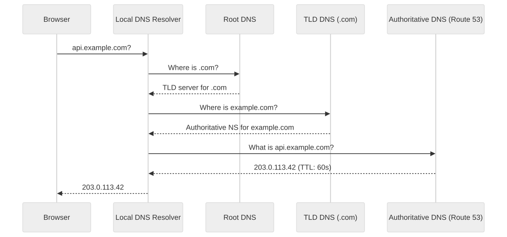
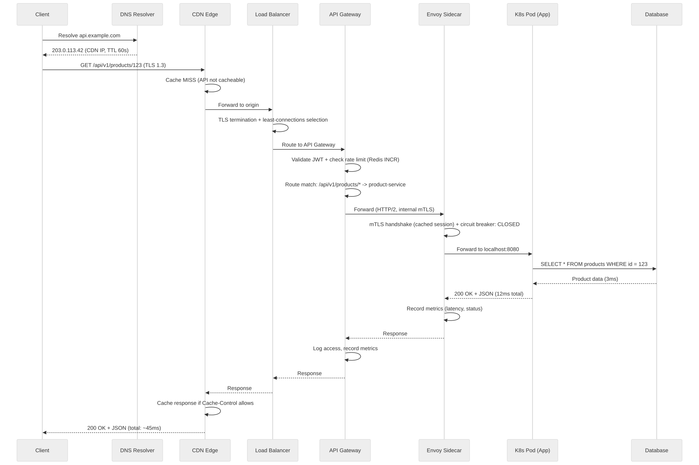
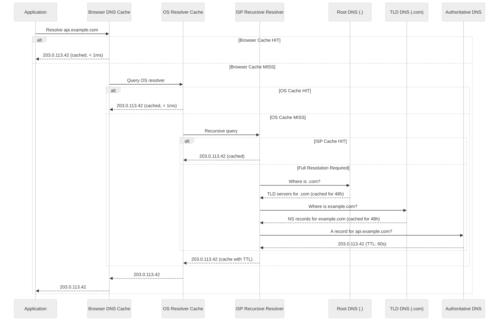
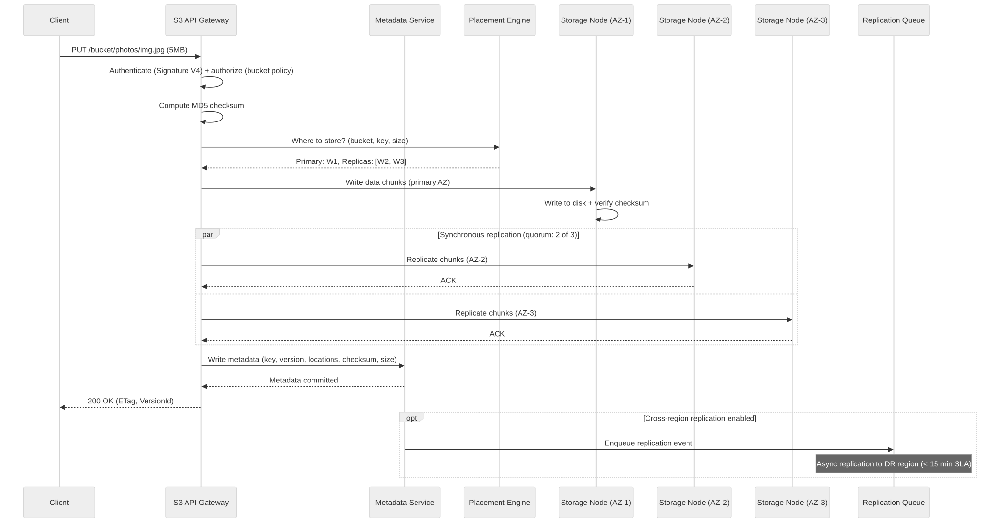
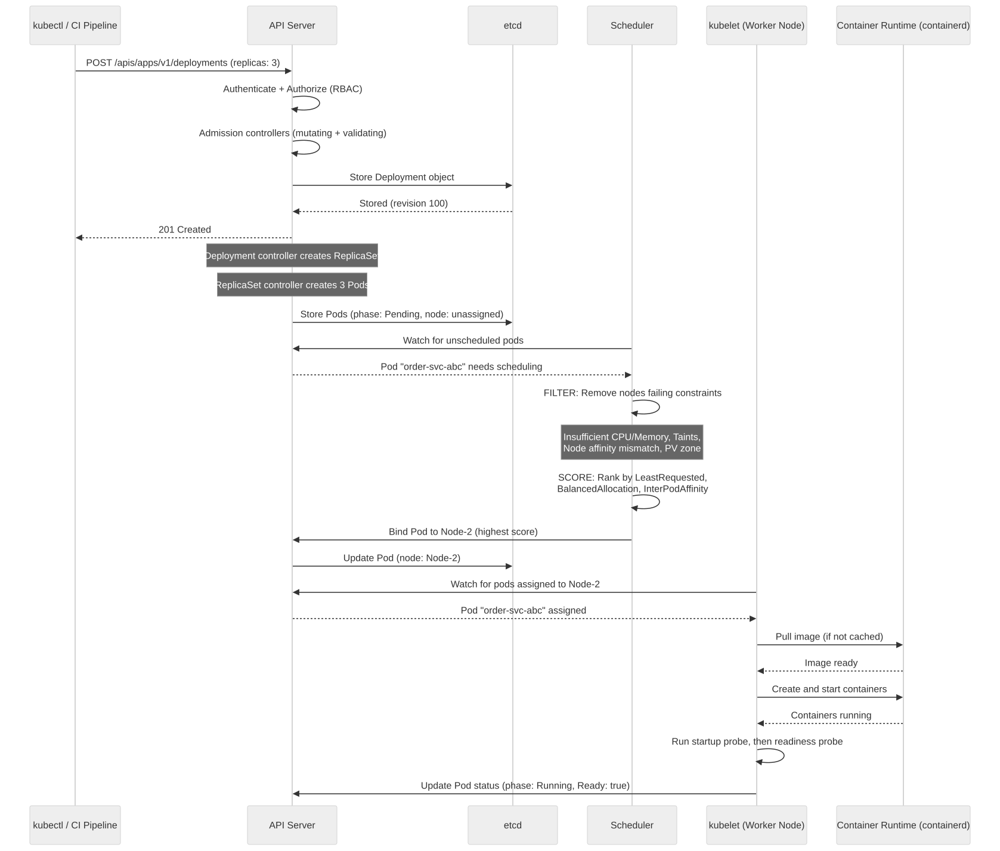
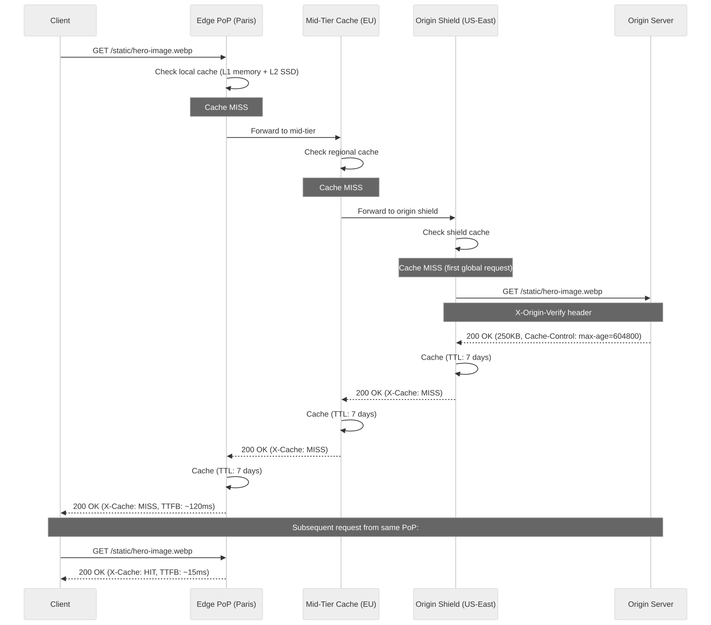

Part Context
Part: Part 5 — Real-World System Design Examples Position: Chapter 26 of 42
Overview
Cloud and infrastructure systems are the platform layer that every application runs on. When an engineer says "deploy to production," these are the systems that make it happen: load balancers routing traffic, API gateways enforcing policies, Kubernetes scheduling containers, object storage serving files, DNS resolving domains, and CDNs caching content at the edge.
This chapter covers four domain areas with 12 subsystems:
Domain A — Core Infrastructure
- Load Balancer (L4/L7) — distributing traffic across server pools with health checking and session persistence.
- API Gateway — centralized request routing, authentication, rate limiting, and protocol translation.
- Service Mesh — sidecar-based inter-service communication with observability, security, and traffic management.
Domain B — Compute
- Container Orchestration (Kubernetes) — scheduling, scaling, and managing containerized workloads.
- Serverless Platform — event-driven function execution with automatic scaling and pay-per-invocation.
- Job Scheduler — running batch jobs, cron tasks, and workflow orchestration.
Domain C — Storage
- Object Storage System (S3-like) — scalable key-value blob storage with durability guarantees.
- Distributed File System — POSIX-compatible shared filesystem across cluster nodes.
- Block Storage — network-attached virtual disks for VMs and databases.
Domain D — Networking
- DNS System — domain name resolution with global load balancing and failover.
- CDN System — edge caching and content delivery across global PoPs.
- VPC / Subnet System — software-defined networking with isolation, routing, and security groups.
Why This System Matters in Real Systems
- Every application depends on these systems. Understanding infrastructure is what separates senior engineers from juniors.
- Cloud infrastructure is a $500B+ market (AWS, GCP, Azure). Designing these systems is both an interview topic and a career domain.
- Infrastructure failures cascade: a DNS outage takes down everything, a load balancer misconfiguration causes traffic blackholes.
- The same patterns appear whether you're using managed cloud services or building on-premise — understanding the internals helps you use managed services more effectively.
High-Level Architecture

Low-Level Design
1. Load Balancer (L4/L7)
Overview
Load balancers distribute incoming traffic across multiple backend servers, providing high availability, horizontal scaling, and fault tolerance. They operate at two layers:
| Layer | OSI Layer | Routes By | Use Case |
|---|---|---|---|
| L4 (Transport) | TCP/UDP | IP + Port | High throughput, simple routing, TCP passthrough |
| L7 (Application) | HTTP/HTTPS | URL path, headers, cookies | Content-based routing, SSL termination, request inspection |
L7 Load Balancer Architecture

Load Balancing Algorithms
| Algorithm | How It Works | Best For |
|---|---|---|
| Round Robin | Cycle through servers sequentially | Equal-capacity servers |
| Weighted Round Robin | Servers with more weight get more traffic | Heterogeneous servers |
| Least Connections | Send to server with fewest active connections | Long-lived connections (WebSocket) |
| IP Hash | Hash client IP → consistent server | Session affinity without cookies |
| Consistent Hashing | Hash-ring-based routing | Cache-friendly routing |
| Random Two Choices | Pick 2 random servers; send to less-loaded one | Simple yet effective |
Health Checking
HTTP health check: GET /health every 10 seconds
- 200 OK → server is healthy
- 3 consecutive failures → remove from pool
- 2 consecutive successes → re-add to pool
Edge Cases
- Thundering herd after server restart: Gradually ramp up traffic to restarted server (slow start).
- Connection draining: When removing a server, finish existing requests (30s grace) before stopping.
- SSL certificate rotation: Zero-downtime cert rotation with dual-cert loading.
- Sticky sessions: Use cookie-based affinity when stateful backends are unavoidable; prefer stateless design.
2. API Gateway
Overview
The API Gateway is the single entry point for all client requests. It handles cross-cutting concerns so individual services don't have to: authentication, rate limiting, request routing, protocol translation, and observability.
Responsibilities
Rate Limiting Algorithms
| Algorithm | How It Works | Pros | Cons |
|---|---|---|---|
| Token Bucket | Tokens refill at fixed rate; each request consumes a token | Allows bursts up to bucket size | Burst can overwhelm downstream |
| Sliding Window | Count requests in rolling time window | Smooth rate enforcement | Higher memory (per-window counters) |
| Fixed Window | Count requests in fixed intervals | Simple, low memory | Edge burst at window boundary |
| Leaky Bucket | Requests queued; processed at fixed rate | Perfectly smooth output | Latency for queued requests |
Distributed rate limiting: Use Redis with INCR and EXPIRE for cluster-wide rate limiting:
key = "rate:{user_id}:{minute_bucket}"
count = INCR key
if count == 1: EXPIRE key 60
if count > limit: return 429 Too Many Requests
3. Service Mesh
Overview
A Service Mesh manages service-to-service communication in a microservices architecture using sidecar proxies (typically Envoy). It provides mutual TLS, load balancing, circuit breaking, retries, and observability without changing application code.
Architecture

Key features: mTLS (mutual TLS between all services), circuit breaking (stop calling failing services), retries with backoff, traffic splitting (canary deployments), distributed tracing (inject trace headers).
4. Container Orchestration (Kubernetes)
Overview
Kubernetes automates deploying, scaling, and managing containerized applications. It is the de facto standard for production workload management, used by 80%+ of enterprises.
Architecture

Key Concepts
| Concept | What It Does |
|---|---|
| Pod | Smallest deployable unit; one or more containers sharing network/storage |
| Deployment | Manages pod replicas with rolling updates |
| Service | Stable network endpoint for a set of pods |
| Ingress | L7 routing rules mapping external URLs to services |
| HPA | Horizontal Pod Autoscaler — scales pods based on CPU/custom metrics |
| ConfigMap/Secret | Inject configuration and secrets into pods |
| PVC | Persistent Volume Claim — request durable storage for pods |
| Namespace | Logical cluster partitioning for multi-team isolation |
Scheduling Algorithm
1. Filter: Remove nodes that can't run the pod (insufficient CPU/memory, taints, affinity rules)
2. Score: Rank remaining nodes by preference (resource utilization, spreading, affinity)
3. Bind: Assign pod to highest-scoring node
5. Serverless Platform
Overview
Serverless (Functions-as-a-Service) runs code in response to events without managing servers. The platform handles provisioning, scaling (including to zero), and billing per invocation.
Architecture

Cold Start Problem
| Language | Cold Start | Warm Invocation |
|---|---|---|
| Python | 200-500ms | 5-50ms |
| Node.js | 100-300ms | 5-50ms |
| Java/JVM | 1-5 seconds | 10-100ms |
| Go | 50-100ms | 1-10ms |
| Rust | 10-50ms | 1-5ms |
Mitigation: Provisioned concurrency (pre-warm N instances), keep-alive pings, lightweight runtimes (Go/Rust).
6. Job Scheduler
Overview
Job Schedulers run background tasks: cron jobs, batch processing, data pipelines, and one-off tasks. They handle scheduling, dependency management, retry logic, and resource allocation.
| Scheduler | Use Case | Scale |
|---|---|---|
| Kubernetes CronJob | Simple cron in K8s | Single cluster |
| Apache Airflow | DAG-based data pipelines | Medium-large |
| Temporal | Durable workflow orchestration | Complex workflows |
| AWS Step Functions | Serverless state machines | Event-driven |
| Custom (DB-backed) | App-specific background jobs | Simple use cases |
7. Object Storage System (S3-like)
Overview
Object storage provides scalable, durable, key-value blob storage. S3 stores trillions of objects and handles millions of requests per second. It is the default storage layer for media, backups, data lakes, and static assets.
Architecture

Durability Math (11 nines)
S3 guarantees 99.999999999% durability. This means: if you store 10 million objects, you expect to lose one object every 10,000 years.
Achieved through: - 3-way replication across availability zones (hot data) - Erasure coding (Reed-Solomon) for cold data (8+3 scheme: tolerate 3 disk failures) - Continuous background verification (checksum every stored block periodically) - Automatic repair of detected corruption
Storage Classes
| Class | Access Pattern | Durability | Latency | Cost (per GB/month) |
|---|---|---|---|---|
| Standard | Frequent | 11 nines | < 100ms | $0.023 |
| Infrequent Access | Monthly | 11 nines | < 100ms | $0.0125 |
| Glacier | Rare (archive) | 11 nines | Minutes-hours | $0.004 |
| Glacier Deep | Very rare | 11 nines | 12-48 hours | $0.00099 |
8. Distributed File System
Overview
Distributed file systems provide POSIX-compatible shared storage across multiple machines. Unlike object storage (key-value), DFS supports directories, file locking, random reads/writes, and shared access.
| System | Provider | Use Case |
|---|---|---|
| EFS | AWS | Shared storage for containers/VMs |
| GlusterFS | Open source | On-premise shared storage |
| CephFS | Open source | Unified storage (block + object + file) |
| HDFS | Apache | Big data processing (Spark, Hadoop) |
HDFS Architecture

9. Block Storage
Overview
Block storage provides raw disk volumes that attach to VMs or containers. Unlike object storage (API-based) or file storage (POSIX), block storage presents a raw block device that the OS formats with a filesystem.
| Service | Provider | Use Case |
|---|---|---|
| EBS | AWS | VM disk volumes |
| Persistent Disk | GCP | GKE pod storage |
| Azure Disk | Azure | VM disks |
| Ceph RBD | Open source | On-premise block storage |
Key properties: Low latency (< 1ms), high IOPS (up to 256K), snapshotable, encrypted at rest.
10. DNS System
Overview
DNS translates domain names (api.example.com) to IP addresses. It is the first system contacted in every request and thus a critical point of failure. AWS Route 53 handles trillions of DNS queries per day.
DNS Resolution Flow

DNS-Based Load Balancing
| Strategy | How It Works | Use Case |
|---|---|---|
| Round Robin | Return different IPs per query | Simple multi-server |
| Weighted | Return IPs proportional to weight | Traffic shifting |
| Latency-based | Return IP of closest region | Multi-region |
| Geolocation | Return IP based on requester's country | Data residency |
| Failover | Return backup IP if primary health check fails | DR |
11. CDN System
Overview
CDNs cache and serve content from edge locations worldwide, reducing latency and origin load. Covered in depth in Chapter 21 (Video Streaming); here we focus on the infrastructure design.
Multi-Tier Cache

Cache hit rates: Edge 80-90%, Mid-tier 95%, Shield 99%. Origin serves < 1% of requests at steady state.
12. VPC / Subnet System
Overview
VPCs (Virtual Private Clouds) provide network isolation in the cloud. Each VPC is a logically isolated network with its own IP address range, subnets, route tables, and security rules.
Architecture

Design principles: Public subnets for load balancers; private subnets for application servers; isolated subnets for databases. Security groups as stateful firewalls with least-privilege rules.
Functional Requirements
The following table enumerates the core functional requirements for each of the 12 subsystems. These are the capabilities that users (platform engineers, application developers, SREs) expect from the platform.
| # | Subsystem | Core Functional Requirements |
|---|---|---|
| 1 | Load Balancer (L4/L7) | Register/deregister backend targets dynamically; distribute traffic using configurable algorithms (round-robin, least-connections, weighted, IP-hash, consistent hashing); perform active and passive health checks; terminate TLS and manage certificates; support WebSocket and HTTP/2 upgrades; provide connection draining on backend removal; expose real-time metrics (active connections, request rate, error rate); support sticky sessions via cookies or IP affinity; allow content-based routing by host, path, headers, and query parameters; enable cross-zone load balancing |
| 2 | API Gateway | Route requests to backend services by method, path, host, and headers; enforce authentication (JWT, OAuth2, API key, mTLS); apply rate limiting per consumer, per API, and globally; transform protocols (REST to gRPC, GraphQL to REST); manage API versioning; generate and validate API keys; collect request/response metrics and access logs; support request/response body transformation; provide a developer portal with API documentation; enable canary and blue-green deployments at the API level; support WebSocket and SSE proxying |
| 3 | Service Mesh | Inject sidecar proxies automatically into application pods; establish mutual TLS between all services without code changes; provide service discovery and load balancing; implement circuit breaking with configurable thresholds; enable automatic retries with exponential backoff and jitter; support traffic splitting for canary releases; inject distributed tracing headers; collect per-request metrics (latency, status codes, throughput); enforce authorization policies (allow/deny per service pair); support fault injection for chaos testing |
| 4 | Kubernetes | Schedule pods across nodes based on resource requests, affinity, taints, and priorities; perform rolling updates with configurable surge and unavailability; auto-scale pods horizontally based on CPU, memory, or custom metrics; auto-scale cluster nodes based on pending pod demand; manage secrets and configuration injection; provide stable network endpoints (Services) and DNS-based service discovery; support persistent volume provisioning via CSI drivers; enforce resource quotas and limit ranges per namespace; provide RBAC for API access control; execute batch jobs and cron jobs |
| 5 | Serverless Platform | Deploy functions from source code or container images; invoke functions via HTTP, queue, schedule, or event triggers; auto-scale from zero to thousands of concurrent instances; manage function versions and aliases; provide provisioned concurrency to eliminate cold starts; enforce execution time limits and memory constraints; support environment variables and secrets injection; provide per-invocation billing; enable function layers (shared libraries); support dead-letter queues for failed invocations; collect invocation logs and metrics |
| 6 | Job Scheduler | Define jobs with cron expressions or event-based triggers; manage job dependencies as DAGs (directed acyclic graphs); retry failed jobs with configurable backoff; enforce job timeouts and resource limits; provide job priority queuing; support parameterized job execution; track job run history with status, duration, and output; enable manual triggering and cancellation of job runs; distribute job execution across worker pools; send notifications on job success/failure; support idempotent job execution |
| 7 | Object Storage | Store and retrieve objects up to 5TB using unique keys within buckets; support multipart uploads for large objects; provide object versioning with version-specific retrieval; enforce bucket-level and object-level access policies; support lifecycle rules for automatic tier transitions and expiration; generate pre-signed URLs for temporary access; replicate objects across regions for disaster recovery; support server-side encryption (SSE-S3, SSE-KMS, SSE-C); provide event notifications on object creation/deletion; support object locking for compliance (WORM); enable cross-origin resource sharing (CORS) |
| 8 | Distributed FS | Provide POSIX-compatible file operations (read, write, seek, truncate); support shared access across multiple compute nodes simultaneously; implement file and range locking (advisory and mandatory); create point-in-time snapshots of filesystems; enforce per-directory and per-user quotas; support automatic data replication across failure domains; provide consistent metadata operations (create, rename, delete); enable elastic throughput scaling; support NFS and SMB protocols |
| 9 | Block Storage | Create, attach, detach, and delete network-attached volumes; snapshot volumes for point-in-time backup; restore volumes from snapshots; resize volumes without downtime; encrypt volumes at rest using KMS; support multiple volume types (SSD, HDD, provisioned IOPS); attach volumes to VMs and containers; provide multi-attach for shared access; replicate data across availability zones; expose IOPS and throughput metrics; support volume cloning |
| 10 | DNS | Create and manage DNS zones (hosted zones); add, update, and delete DNS records (A, AAAA, CNAME, MX, TXT, SRV, NS, SOA, ALIAS); support weighted, latency-based, geolocation, and failover routing policies; perform health checks against endpoints; support private DNS zones for VPC-internal resolution; enable DNSSEC for zone signing and validation; provide query logging and analytics; support domain registration and transfer; enable traffic flow with visual policy editor; support automatic zone delegation |
| 11 | CDN | Create distributions with one or more origin servers; configure cache behaviors per URL path pattern; set TTLs and cache key policies (headers, query strings, cookies); invalidate cached objects by path or wildcard; support custom SSL certificates on edge; enable origin access identity (restrict origin to CDN only); provide real-time access logs; support Lambda@Edge / edge functions; enable WebSocket pass-through; support origin failover; compress responses automatically (gzip, Brotli); enable geo-restriction |
| 12 | VPC / Subnet | Create VPCs with custom CIDR blocks; provision public and private subnets across availability zones; configure route tables for subnet-level routing; create internet gateways for public internet access; provision NAT gateways for private subnet egress; define security groups as stateful firewalls; define network ACLs as stateless firewalls; establish VPC peering and transit gateway connections; create VPN and Direct Connect for hybrid connectivity; enable VPC flow logs for traffic auditing; support IPv6 dual-stack; reserve and assign Elastic IPs |
Non-Functional Requirements
Every subsystem must meet specific non-functional targets. These numbers are modeled after production-grade cloud platforms.
Latency Requirements
| Subsystem | P50 Latency | P99 Latency | P99.9 Latency | Notes |
|---|---|---|---|---|
| Load Balancer | < 1ms (L4), < 5ms (L7) | < 5ms (L4), < 20ms (L7) | < 10ms (L4), < 50ms (L7) | Excludes backend processing time |
| API Gateway | < 10ms overhead | < 30ms overhead | < 100ms overhead | Overhead above direct backend call |
| Service Mesh | < 2ms per hop | < 10ms per hop | < 25ms per hop | Sidecar proxy overhead |
| Kubernetes API | < 50ms (reads) | < 200ms (reads) | < 500ms (reads) | etcd-backed reads; writes < 100ms P50 |
| Serverless (warm) | < 10ms | < 50ms | < 200ms | Cold start adds 100ms-5s per language |
| Job Scheduler | < 5s scheduling delay | < 15s scheduling delay | < 30s scheduling delay | Time from trigger to job start |
| Object Storage | < 100ms (GET, first byte) | < 250ms | < 500ms | Depends on object size and storage class |
| Block Storage | < 1ms (SSD) | < 5ms (SSD) | < 10ms (SSD) | Provisioned IOPS volumes |
| DNS | < 1ms (cached) | < 50ms (recursive) | < 200ms (recursive) | Authoritative response time |
| CDN | < 20ms (edge hit) | < 50ms (edge hit) | < 100ms (edge hit) | Varies by PoP proximity |
| VPC | < 0.5ms (same AZ) | < 1ms (same AZ) | < 2ms (same AZ) | Network fabric latency |
Availability Requirements
| Subsystem | Target Availability | Allowed Downtime/Year | Notes |
|---|---|---|---|
| Load Balancer | 99.99% | 52.6 minutes | Multi-AZ active-active |
| API Gateway | 99.95% | 4.38 hours | Regional service |
| Service Mesh (data plane) | 99.99% | 52.6 minutes | Sidecar per pod; control plane 99.9% |
| Kubernetes Control Plane | 99.95% | 4.38 hours | Multi-master etcd |
| Serverless | 99.95% | 4.38 hours | Regional, multi-AZ |
| Job Scheduler | 99.9% | 8.76 hours | Acceptable for batch workloads |
| Object Storage | 99.99% | 52.6 minutes | Data durability: 99.999999999% |
| Block Storage | 99.99% | 52.6 minutes | Per-volume availability |
| DNS | 100% (SLA) | 0 minutes | Anycast, globally distributed |
| CDN | 99.9% | 8.76 hours | Per-distribution SLA |
| VPC | 99.99% | 52.6 minutes | Network fabric availability |
Throughput Requirements
| Subsystem | Throughput Target | Scaling Unit |
|---|---|---|
| Load Balancer | 1M+ concurrent connections, 500K RPS per LB instance | Horizontal LB pool |
| API Gateway | 100K RPS per gateway cluster | Add gateway nodes |
| Service Mesh | Limited by sidecar capacity: 50K RPS per sidecar | Per-pod sidecar |
| Kubernetes | 5,000 nodes per cluster, 150,000 pods per cluster | Multiple clusters for beyond |
| Serverless | 10,000 concurrent executions per account (soft limit) | Request limit increase |
| Job Scheduler | 10,000 concurrent job runs | Worker pool scaling |
| Object Storage | 5,500 GET/s and 3,500 PUT/s per prefix | Partition by prefix |
| Block Storage | 256,000 IOPS (io2 Block Express), 4,000 MB/s throughput | Per-volume type |
| DNS | Unlimited (anycast global fleet) | Automatic |
| CDN | 300 Gbps per distribution | Multi-CDN for beyond |
| VPC | 25 Gbps per instance (enhanced networking) | Placement groups for higher |
Capacity Estimation
Assumptions: Mid-Size Platform (serves 10M daily active users)
Traffic Estimates
| Metric | Estimate | Derivation |
|---|---|---|
| DAU | 10,000,000 | Given |
| Avg requests per user per day | 50 | Mix of API calls, page loads, assets |
| Total requests per day | 500,000,000 | 10M x 50 |
| Average RPS | ~5,800 | 500M / 86,400 |
| Peak RPS (5x average) | ~29,000 | Typical peak-to-average ratio |
| Burst RPS (10x average, flash events) | ~58,000 | Black Friday, launch events |
Load Balancer Capacity
| Metric | Estimate |
|---|---|
| Peak concurrent connections | 500,000 |
| New connections per second | 30,000 |
| TLS handshakes per second | 15,000 (with session resumption) |
| LB instances needed (50K conn each) | 10 (active) + 10 (standby) |
| Bandwidth | 20 Gbps peak |
API Gateway Capacity
| Metric | Estimate |
|---|---|
| Total API calls per day | 300,000,000 (60% of total requests) |
| Peak API RPS | 17,400 |
| Rate limit entries (Redis) | 1,000,000 active keys |
| Gateway instances (5K RPS each) | 4 (active) + 2 (buffer) |
| Access log storage | 50 GB/day (compressed) |
Kubernetes Cluster Capacity
| Metric | Estimate |
|---|---|
| Total microservices | 150 |
| Pods per service (average) | 10 |
| Total pods | 1,500 |
| Worker nodes (100 pods/node) | 20 |
| CPU per node | 64 vCPUs |
| Memory per node | 256 GB |
| Total cluster CPU | 1,280 vCPUs |
| Total cluster memory | 5,120 GB |
| etcd storage | 8 GB (cluster state) |
Object Storage Capacity
| Metric | Estimate |
|---|---|
| Total objects stored | 5 billion |
| Total data stored | 2 PB |
| New objects per day | 10,000,000 |
| New data per day | 4 TB |
| GET requests per day | 200,000,000 |
| PUT requests per day | 10,000,000 |
| Metadata DB size | 500 GB (key + metadata index) |
DNS Capacity
| Metric | Estimate |
|---|---|
| Hosted zones | 500 |
| DNS records | 50,000 |
| Queries per day | 2,000,000,000 |
| Peak QPS | 100,000 |
| Health checks | 5,000 endpoints |
CDN Capacity
| Metric | Estimate |
|---|---|
| Total bandwidth served | 100 TB/day |
| Cache hit ratio | 92% |
| Origin requests per day | 16,000,000 (8% miss) |
| Objects cached at edge | 50,000,000 |
| Edge PoPs used | 200+ |
| Invalidation requests per day | 5,000 |
Block Storage Capacity
| Metric | Estimate |
|---|---|
| Total volumes | 500 |
| Total provisioned storage | 200 TB |
| Snapshots per day | 500 |
| Snapshot storage | 50 TB (incremental) |
| Average IOPS per volume | 3,000 |
| Aggregate IOPS | 1,500,000 |
VPC and Networking
| Metric | Estimate |
|---|---|
| VPCs | 10 (per region, multi-account) |
| Subnets | 60 (3 AZs x 2 tiers x 10 VPCs) |
| Security groups | 300 |
| Security group rules | 3,000 |
| VPC peering connections | 20 |
| NAT gateway throughput | 45 Gbps aggregate |
| VPC flow log volume | 500 GB/day |
Detailed Data Models
The following PostgreSQL schemas represent the metadata stores for each subsystem. Production systems often use specialized stores (etcd for K8s, DynamoDB for S3 metadata), but relational schemas best illustrate the data relationships.
Load Balancer Metadata
-- ============================================
-- LOAD BALANCER DATA MODEL
-- ============================================
CREATE TABLE lb_configurations (
lb_id UUID PRIMARY KEY DEFAULT gen_random_uuid(),
account_id UUID NOT NULL,
name VARCHAR(255) NOT NULL,
scheme VARCHAR(20) NOT NULL CHECK (scheme IN ('internet-facing', 'internal')),
lb_type VARCHAR(10) NOT NULL CHECK (lb_type IN ('L4', 'L7')),
state VARCHAR(20) NOT NULL DEFAULT 'provisioning'
CHECK (state IN ('provisioning', 'active', 'updating', 'deleting', 'failed')),
algorithm VARCHAR(30) NOT NULL DEFAULT 'round_robin'
CHECK (algorithm IN ('round_robin', 'weighted_round_robin', 'least_connections',
'ip_hash', 'consistent_hashing', 'random_two_choices')),
vpc_id UUID NOT NULL,
subnet_ids UUID[] NOT NULL,
security_group_ids UUID[] NOT NULL,
idle_timeout_sec INTEGER NOT NULL DEFAULT 60 CHECK (idle_timeout_sec BETWEEN 1 AND 4000),
cross_zone_enabled BOOLEAN NOT NULL DEFAULT TRUE,
deletion_protection BOOLEAN NOT NULL DEFAULT FALSE,
access_log_bucket VARCHAR(255),
access_log_prefix VARCHAR(255),
dns_name VARCHAR(512),
hosted_zone_id UUID,
tags JSONB NOT NULL DEFAULT '{}',
created_at TIMESTAMPTZ NOT NULL DEFAULT NOW(),
updated_at TIMESTAMPTZ NOT NULL DEFAULT NOW(),
created_by UUID NOT NULL,
version INTEGER NOT NULL DEFAULT 1,
UNIQUE (account_id, name)
);
CREATE INDEX idx_lb_account ON lb_configurations (account_id);
CREATE INDEX idx_lb_vpc ON lb_configurations (vpc_id);
CREATE INDEX idx_lb_state ON lb_configurations (state);
CREATE INDEX idx_lb_tags ON lb_configurations USING GIN (tags);
CREATE TABLE lb_listeners (
listener_id UUID PRIMARY KEY DEFAULT gen_random_uuid(),
lb_id UUID NOT NULL REFERENCES lb_configurations(lb_id) ON DELETE CASCADE,
protocol VARCHAR(10) NOT NULL CHECK (protocol IN ('HTTP', 'HTTPS', 'TCP', 'UDP', 'TLS')),
port INTEGER NOT NULL CHECK (port BETWEEN 1 AND 65535),
certificate_id UUID,
ssl_policy VARCHAR(100),
default_action_type VARCHAR(20) NOT NULL CHECK (default_action_type IN ('forward', 'redirect', 'fixed_response')),
default_target_group_id UUID,
created_at TIMESTAMPTZ NOT NULL DEFAULT NOW(),
updated_at TIMESTAMPTZ NOT NULL DEFAULT NOW(),
UNIQUE (lb_id, port, protocol)
);
CREATE INDEX idx_listener_lb ON lb_listeners (lb_id);
CREATE TABLE lb_target_groups (
target_group_id UUID PRIMARY KEY DEFAULT gen_random_uuid(),
lb_id UUID NOT NULL REFERENCES lb_configurations(lb_id) ON DELETE CASCADE,
name VARCHAR(255) NOT NULL,
protocol VARCHAR(10) NOT NULL CHECK (protocol IN ('HTTP', 'HTTPS', 'TCP', 'UDP', 'TLS')),
port INTEGER NOT NULL CHECK (port BETWEEN 1 AND 65535),
target_type VARCHAR(20) NOT NULL CHECK (target_type IN ('instance', 'ip', 'lambda')),
health_check_id UUID,
stickiness_enabled BOOLEAN NOT NULL DEFAULT FALSE,
stickiness_type VARCHAR(20) CHECK (stickiness_type IN ('lb_cookie', 'app_cookie')),
stickiness_ttl_sec INTEGER DEFAULT 86400,
deregistration_delay INTEGER NOT NULL DEFAULT 300,
slow_start_sec INTEGER NOT NULL DEFAULT 0 CHECK (slow_start_sec BETWEEN 0 AND 900),
algorithm VARCHAR(30) NOT NULL DEFAULT 'round_robin',
created_at TIMESTAMPTZ NOT NULL DEFAULT NOW(),
updated_at TIMESTAMPTZ NOT NULL DEFAULT NOW(),
UNIQUE (lb_id, name)
);
CREATE INDEX idx_tg_lb ON lb_target_groups (lb_id);
CREATE TABLE lb_backends (
backend_id UUID PRIMARY KEY DEFAULT gen_random_uuid(),
target_group_id UUID NOT NULL REFERENCES lb_target_groups(target_group_id) ON DELETE CASCADE,
target_type VARCHAR(20) NOT NULL CHECK (target_type IN ('instance', 'ip', 'lambda')),
target_id VARCHAR(255) NOT NULL,
ip_address INET,
port INTEGER NOT NULL CHECK (port BETWEEN 1 AND 65535),
weight INTEGER NOT NULL DEFAULT 100 CHECK (weight BETWEEN 0 AND 1000),
state VARCHAR(20) NOT NULL DEFAULT 'initial'
CHECK (state IN ('initial', 'healthy', 'unhealthy', 'draining', 'unavailable')),
health_description TEXT,
availability_zone VARCHAR(20),
registered_at TIMESTAMPTZ NOT NULL DEFAULT NOW(),
last_health_check TIMESTAMPTZ,
UNIQUE (target_group_id, target_id, port)
);
CREATE INDEX idx_backend_tg ON lb_backends (target_group_id);
CREATE INDEX idx_backend_state ON lb_backends (state);
CREATE INDEX idx_backend_ip ON lb_backends (ip_address);
CREATE TABLE lb_health_checks (
health_check_id UUID PRIMARY KEY DEFAULT gen_random_uuid(),
target_group_id UUID NOT NULL REFERENCES lb_target_groups(target_group_id) ON DELETE CASCADE,
protocol VARCHAR(10) NOT NULL CHECK (protocol IN ('HTTP', 'HTTPS', 'TCP', 'gRPC')),
port INTEGER CHECK (port BETWEEN 1 AND 65535),
path VARCHAR(1024) DEFAULT '/health',
interval_sec INTEGER NOT NULL DEFAULT 30 CHECK (interval_sec BETWEEN 5 AND 300),
timeout_sec INTEGER NOT NULL DEFAULT 5 CHECK (timeout_sec BETWEEN 2 AND 120),
healthy_threshold INTEGER NOT NULL DEFAULT 3 CHECK (healthy_threshold BETWEEN 2 AND 10),
unhealthy_threshold INTEGER NOT NULL DEFAULT 3 CHECK (unhealthy_threshold BETWEEN 2 AND 10),
success_codes VARCHAR(50) DEFAULT '200-299',
created_at TIMESTAMPTZ NOT NULL DEFAULT NOW(),
updated_at TIMESTAMPTZ NOT NULL DEFAULT NOW(),
UNIQUE (target_group_id)
);
CREATE TABLE lb_certificates (
certificate_id UUID PRIMARY KEY DEFAULT gen_random_uuid(),
account_id UUID NOT NULL,
domain_name VARCHAR(255) NOT NULL,
subject_alt_names TEXT[] DEFAULT '{}',
certificate_body TEXT NOT NULL,
private_key_ref VARCHAR(512) NOT NULL,
certificate_chain TEXT,
issuer VARCHAR(255),
status VARCHAR(20) NOT NULL DEFAULT 'pending'
CHECK (status IN ('pending', 'issued', 'active', 'expired', 'revoked', 'failed')),
not_before TIMESTAMPTZ,
not_after TIMESTAMPTZ,
key_algorithm VARCHAR(20) DEFAULT 'RSA_2048',
auto_renew BOOLEAN NOT NULL DEFAULT TRUE,
created_at TIMESTAMPTZ NOT NULL DEFAULT NOW(),
updated_at TIMESTAMPTZ NOT NULL DEFAULT NOW()
);
CREATE INDEX idx_cert_account ON lb_certificates (account_id);
CREATE INDEX idx_cert_domain ON lb_certificates (domain_name);
CREATE INDEX idx_cert_expiry ON lb_certificates (not_after) WHERE status = 'active';
API Gateway Metadata
-- ============================================
-- API GATEWAY DATA MODEL
-- ============================================
CREATE TABLE api_routes (
route_id UUID PRIMARY KEY DEFAULT gen_random_uuid(),
gateway_id UUID NOT NULL,
method VARCHAR(10) NOT NULL CHECK (method IN ('GET', 'POST', 'PUT', 'PATCH', 'DELETE', 'OPTIONS', 'HEAD', 'ANY')),
path VARCHAR(1024) NOT NULL,
description TEXT,
integration_type VARCHAR(20) NOT NULL
CHECK (integration_type IN ('http_proxy', 'lambda', 'grpc', 'mock', 'vpc_link')),
integration_uri VARCHAR(2048) NOT NULL,
integration_method VARCHAR(10),
timeout_ms INTEGER NOT NULL DEFAULT 29000 CHECK (timeout_ms BETWEEN 50 AND 300000),
authorization_type VARCHAR(30) NOT NULL DEFAULT 'NONE'
CHECK (authorization_type IN ('NONE', 'API_KEY', 'JWT', 'OAUTH2', 'CUSTOM', 'IAM')),
authorizer_id UUID,
request_validator VARCHAR(20) DEFAULT 'NONE'
CHECK (request_validator IN ('NONE', 'BODY', 'PARAMS', 'BODY_AND_PARAMS')),
request_model JSONB,
response_model JSONB,
request_transform JSONB,
response_transform JSONB,
cache_enabled BOOLEAN NOT NULL DEFAULT FALSE,
cache_ttl_sec INTEGER DEFAULT 300,
is_active BOOLEAN NOT NULL DEFAULT TRUE,
created_at TIMESTAMPTZ NOT NULL DEFAULT NOW(),
updated_at TIMESTAMPTZ NOT NULL DEFAULT NOW(),
UNIQUE (gateway_id, method, path)
);
CREATE INDEX idx_route_gateway ON api_routes (gateway_id);
CREATE INDEX idx_route_path ON api_routes (gateway_id, path);
CREATE INDEX idx_route_active ON api_routes (gateway_id) WHERE is_active = TRUE;
CREATE TABLE api_rate_limits (
rate_limit_id UUID PRIMARY KEY DEFAULT gen_random_uuid(),
gateway_id UUID NOT NULL,
name VARCHAR(255) NOT NULL,
scope VARCHAR(20) NOT NULL CHECK (scope IN ('global', 'per_consumer', 'per_route', 'per_ip')),
route_id UUID REFERENCES api_routes(route_id) ON DELETE CASCADE,
consumer_id UUID,
algorithm VARCHAR(20) NOT NULL DEFAULT 'token_bucket'
CHECK (algorithm IN ('token_bucket', 'sliding_window', 'fixed_window', 'leaky_bucket')),
requests_per_second INTEGER,
requests_per_minute INTEGER,
requests_per_hour INTEGER,
requests_per_day INTEGER,
burst_size INTEGER,
throttle_action VARCHAR(20) NOT NULL DEFAULT 'reject'
CHECK (throttle_action IN ('reject', 'queue', 'degrade')),
retry_after_sec INTEGER DEFAULT 60,
is_active BOOLEAN NOT NULL DEFAULT TRUE,
created_at TIMESTAMPTZ NOT NULL DEFAULT NOW(),
updated_at TIMESTAMPTZ NOT NULL DEFAULT NOW(),
UNIQUE (gateway_id, name)
);
CREATE INDEX idx_rl_gateway ON api_rate_limits (gateway_id);
CREATE INDEX idx_rl_route ON api_rate_limits (route_id);
CREATE TABLE api_consumers (
consumer_id UUID PRIMARY KEY DEFAULT gen_random_uuid(),
gateway_id UUID NOT NULL,
name VARCHAR(255) NOT NULL,
description TEXT,
email VARCHAR(255),
organization VARCHAR(255),
tier VARCHAR(20) NOT NULL DEFAULT 'free'
CHECK (tier IN ('free', 'basic', 'pro', 'enterprise', 'internal')),
state VARCHAR(20) NOT NULL DEFAULT 'active'
CHECK (state IN ('active', 'suspended', 'revoked')),
metadata JSONB NOT NULL DEFAULT '{}',
created_at TIMESTAMPTZ NOT NULL DEFAULT NOW(),
updated_at TIMESTAMPTZ NOT NULL DEFAULT NOW(),
UNIQUE (gateway_id, name)
);
CREATE INDEX idx_consumer_gateway ON api_consumers (gateway_id);
CREATE INDEX idx_consumer_tier ON api_consumers (tier);
CREATE TABLE api_keys (
key_id UUID PRIMARY KEY DEFAULT gen_random_uuid(),
consumer_id UUID NOT NULL REFERENCES api_consumers(consumer_id) ON DELETE CASCADE,
gateway_id UUID NOT NULL,
key_prefix VARCHAR(8) NOT NULL,
key_hash VARCHAR(128) NOT NULL,
name VARCHAR(255) NOT NULL,
scopes TEXT[] NOT NULL DEFAULT '{}',
allowed_routes UUID[],
allowed_ips INET[],
state VARCHAR(20) NOT NULL DEFAULT 'active'
CHECK (state IN ('active', 'disabled', 'expired', 'revoked')),
expires_at TIMESTAMPTZ,
last_used_at TIMESTAMPTZ,
usage_count BIGINT NOT NULL DEFAULT 0,
created_at TIMESTAMPTZ NOT NULL DEFAULT NOW(),
updated_at TIMESTAMPTZ NOT NULL DEFAULT NOW()
);
CREATE INDEX idx_key_hash ON api_keys (key_hash);
CREATE INDEX idx_key_consumer ON api_keys (consumer_id);
CREATE INDEX idx_key_state ON api_keys (state);
Service Mesh Metadata
-- ============================================
-- SERVICE MESH DATA MODEL
-- ============================================
CREATE TABLE mesh_services (
service_id UUID PRIMARY KEY DEFAULT gen_random_uuid(),
mesh_id UUID NOT NULL,
name VARCHAR(255) NOT NULL,
namespace VARCHAR(255) NOT NULL DEFAULT 'default',
protocol VARCHAR(10) NOT NULL DEFAULT 'HTTP'
CHECK (protocol IN ('HTTP', 'HTTPS', 'gRPC', 'TCP')),
port INTEGER NOT NULL CHECK (port BETWEEN 1 AND 65535),
target_port INTEGER CHECK (target_port BETWEEN 1 AND 65535),
sidecar_image VARCHAR(512) NOT NULL DEFAULT 'envoyproxy/envoy:v1.28',
sidecar_cpu_limit VARCHAR(20) DEFAULT '500m',
sidecar_mem_limit VARCHAR(20) DEFAULT '256Mi',
mtls_mode VARCHAR(20) NOT NULL DEFAULT 'STRICT'
CHECK (mtls_mode IN ('STRICT', 'PERMISSIVE', 'DISABLE')),
load_balancing VARCHAR(30) NOT NULL DEFAULT 'ROUND_ROBIN'
CHECK (load_balancing IN ('ROUND_ROBIN', 'LEAST_REQUEST', 'RANDOM', 'RING_HASH', 'MAGLEV')),
circuit_breaker JSONB,
retry_policy JSONB,
timeout_ms INTEGER DEFAULT 15000,
health_check_path VARCHAR(1024) DEFAULT '/healthz',
outlier_detection JSONB,
metadata JSONB NOT NULL DEFAULT '{}',
created_at TIMESTAMPTZ NOT NULL DEFAULT NOW(),
updated_at TIMESTAMPTZ NOT NULL DEFAULT NOW(),
UNIQUE (mesh_id, namespace, name)
);
CREATE INDEX idx_mesh_svc_mesh ON mesh_services (mesh_id);
CREATE INDEX idx_mesh_svc_ns ON mesh_services (mesh_id, namespace);
CREATE TABLE mesh_policies (
policy_id UUID PRIMARY KEY DEFAULT gen_random_uuid(),
mesh_id UUID NOT NULL,
name VARCHAR(255) NOT NULL,
namespace VARCHAR(255) NOT NULL DEFAULT 'default',
policy_type VARCHAR(30) NOT NULL
CHECK (policy_type IN ('authorization', 'traffic_shift', 'fault_injection',
'rate_limit', 'circuit_breaker', 'retry', 'timeout', 'mirror')),
source_service_id UUID REFERENCES mesh_services(service_id),
target_service_id UUID REFERENCES mesh_services(service_id),
spec JSONB NOT NULL,
priority INTEGER NOT NULL DEFAULT 0,
is_active BOOLEAN NOT NULL DEFAULT TRUE,
created_at TIMESTAMPTZ NOT NULL DEFAULT NOW(),
updated_at TIMESTAMPTZ NOT NULL DEFAULT NOW(),
UNIQUE (mesh_id, namespace, name)
);
CREATE INDEX idx_mesh_policy_type ON mesh_policies (policy_type);
CREATE INDEX idx_mesh_policy_active ON mesh_policies (mesh_id) WHERE is_active = TRUE;
CREATE TABLE mesh_certificates (
cert_id UUID PRIMARY KEY DEFAULT gen_random_uuid(),
mesh_id UUID NOT NULL,
service_id UUID NOT NULL REFERENCES mesh_services(service_id) ON DELETE CASCADE,
serial_number VARCHAR(128) NOT NULL UNIQUE,
subject_cn VARCHAR(512) NOT NULL,
san_dns TEXT[] NOT NULL DEFAULT '{}',
san_uri TEXT[] NOT NULL DEFAULT '{}',
issuer_cn VARCHAR(512) NOT NULL,
not_before TIMESTAMPTZ NOT NULL,
not_after TIMESTAMPTZ NOT NULL,
key_algorithm VARCHAR(20) NOT NULL DEFAULT 'ECDSA_P256',
certificate_pem_ref VARCHAR(512) NOT NULL,
private_key_ref VARCHAR(512) NOT NULL,
state VARCHAR(20) NOT NULL DEFAULT 'active'
CHECK (state IN ('active', 'rotating', 'expired', 'revoked')),
rotation_interval INTERVAL NOT NULL DEFAULT '24 hours',
last_rotated_at TIMESTAMPTZ NOT NULL DEFAULT NOW(),
created_at TIMESTAMPTZ NOT NULL DEFAULT NOW(),
updated_at TIMESTAMPTZ NOT NULL DEFAULT NOW()
);
CREATE INDEX idx_mesh_cert_service ON mesh_certificates (service_id);
CREATE INDEX idx_mesh_cert_expiry ON mesh_certificates (not_after) WHERE state = 'active';
Kubernetes Metadata
-- ============================================
-- KUBERNETES METADATA DATA MODEL
-- Note: K8s uses etcd in practice; this relational model
-- represents equivalent data for system design discussions.
-- ============================================
CREATE TABLE k8s_clusters (
cluster_id UUID PRIMARY KEY DEFAULT gen_random_uuid(),
account_id UUID NOT NULL,
name VARCHAR(255) NOT NULL,
region VARCHAR(50) NOT NULL,
k8s_version VARCHAR(20) NOT NULL,
platform VARCHAR(20) NOT NULL CHECK (platform IN ('EKS', 'GKE', 'AKS', 'self-managed')),
state VARCHAR(20) NOT NULL DEFAULT 'creating'
CHECK (state IN ('creating', 'active', 'updating', 'upgrading', 'deleting', 'failed')),
endpoint VARCHAR(512),
certificate_authority TEXT,
vpc_id UUID NOT NULL,
subnet_ids UUID[] NOT NULL,
security_group_ids UUID[] NOT NULL,
service_cidr CIDR NOT NULL DEFAULT '10.100.0.0/16',
pod_cidr CIDR NOT NULL DEFAULT '10.244.0.0/16',
dns_cluster_ip INET NOT NULL DEFAULT '10.100.0.10',
logging_config JSONB NOT NULL DEFAULT '{"api": true, "audit": true, "authenticator": true}',
encryption_config JSONB,
node_count INTEGER NOT NULL DEFAULT 0,
pod_count INTEGER NOT NULL DEFAULT 0,
tags JSONB NOT NULL DEFAULT '{}',
created_at TIMESTAMPTZ NOT NULL DEFAULT NOW(),
updated_at TIMESTAMPTZ NOT NULL DEFAULT NOW(),
created_by UUID NOT NULL,
UNIQUE (account_id, name, region)
);
CREATE INDEX idx_k8s_cluster_account ON k8s_clusters (account_id);
CREATE INDEX idx_k8s_cluster_state ON k8s_clusters (state);
CREATE TABLE k8s_namespaces (
namespace_id UUID PRIMARY KEY DEFAULT gen_random_uuid(),
cluster_id UUID NOT NULL REFERENCES k8s_clusters(cluster_id) ON DELETE CASCADE,
name VARCHAR(255) NOT NULL,
state VARCHAR(20) NOT NULL DEFAULT 'active'
CHECK (state IN ('active', 'terminating')),
labels JSONB NOT NULL DEFAULT '{}',
annotations JSONB NOT NULL DEFAULT '{}',
resource_quota JSONB,
limit_range JSONB,
created_at TIMESTAMPTZ NOT NULL DEFAULT NOW(),
updated_at TIMESTAMPTZ NOT NULL DEFAULT NOW(),
UNIQUE (cluster_id, name)
);
CREATE INDEX idx_ns_cluster ON k8s_namespaces (cluster_id);
CREATE TABLE k8s_deployments (
deployment_id UUID PRIMARY KEY DEFAULT gen_random_uuid(),
cluster_id UUID NOT NULL REFERENCES k8s_clusters(cluster_id) ON DELETE CASCADE,
namespace_id UUID NOT NULL REFERENCES k8s_namespaces(namespace_id) ON DELETE CASCADE,
name VARCHAR(255) NOT NULL,
replicas_desired INTEGER NOT NULL DEFAULT 1,
replicas_ready INTEGER NOT NULL DEFAULT 0,
replicas_available INTEGER NOT NULL DEFAULT 0,
replicas_updated INTEGER NOT NULL DEFAULT 0,
strategy_type VARCHAR(20) NOT NULL DEFAULT 'RollingUpdate'
CHECK (strategy_type IN ('RollingUpdate', 'Recreate')),
max_surge VARCHAR(10) DEFAULT '25%',
max_unavailable VARCHAR(10) DEFAULT '25%',
min_ready_seconds INTEGER NOT NULL DEFAULT 0,
revision_history_limit INTEGER NOT NULL DEFAULT 10,
current_revision INTEGER NOT NULL DEFAULT 1,
container_image VARCHAR(512) NOT NULL,
container_port INTEGER CHECK (container_port BETWEEN 1 AND 65535),
cpu_request VARCHAR(20) DEFAULT '100m',
cpu_limit VARCHAR(20) DEFAULT '500m',
memory_request VARCHAR(20) DEFAULT '128Mi',
memory_limit VARCHAR(20) DEFAULT '512Mi',
env_vars JSONB NOT NULL DEFAULT '{}',
volumes JSONB NOT NULL DEFAULT '[]',
liveness_probe JSONB,
readiness_probe JSONB,
node_selector JSONB,
affinity JSONB,
tolerations JSONB NOT NULL DEFAULT '[]',
labels JSONB NOT NULL DEFAULT '{}',
annotations JSONB NOT NULL DEFAULT '{}',
state VARCHAR(20) NOT NULL DEFAULT 'progressing'
CHECK (state IN ('progressing', 'available', 'failed')),
paused BOOLEAN NOT NULL DEFAULT FALSE,
created_at TIMESTAMPTZ NOT NULL DEFAULT NOW(),
updated_at TIMESTAMPTZ NOT NULL DEFAULT NOW(),
UNIQUE (cluster_id, namespace_id, name)
);
CREATE INDEX idx_deploy_cluster ON k8s_deployments (cluster_id);
CREATE INDEX idx_deploy_ns ON k8s_deployments (namespace_id);
CREATE INDEX idx_deploy_state ON k8s_deployments (state);
CREATE TABLE k8s_pods (
pod_id UUID PRIMARY KEY DEFAULT gen_random_uuid(),
cluster_id UUID NOT NULL REFERENCES k8s_clusters(cluster_id) ON DELETE CASCADE,
namespace_id UUID NOT NULL REFERENCES k8s_namespaces(namespace_id) ON DELETE CASCADE,
deployment_id UUID REFERENCES k8s_deployments(deployment_id) ON DELETE SET NULL,
name VARCHAR(255) NOT NULL,
node_name VARCHAR(255),
host_ip INET,
pod_ip INET,
phase VARCHAR(20) NOT NULL DEFAULT 'Pending'
CHECK (phase IN ('Pending', 'Running', 'Succeeded', 'Failed', 'Unknown')),
qos_class VARCHAR(20) CHECK (qos_class IN ('Guaranteed', 'Burstable', 'BestEffort')),
restart_count INTEGER NOT NULL DEFAULT 0,
container_statuses JSONB NOT NULL DEFAULT '[]',
conditions JSONB NOT NULL DEFAULT '[]',
started_at TIMESTAMPTZ,
finished_at TIMESTAMPTZ,
labels JSONB NOT NULL DEFAULT '{}',
annotations JSONB NOT NULL DEFAULT '{}',
created_at TIMESTAMPTZ NOT NULL DEFAULT NOW(),
updated_at TIMESTAMPTZ NOT NULL DEFAULT NOW()
);
CREATE INDEX idx_pod_cluster ON k8s_pods (cluster_id);
CREATE INDEX idx_pod_ns ON k8s_pods (namespace_id);
CREATE INDEX idx_pod_deployment ON k8s_pods (deployment_id);
CREATE INDEX idx_pod_node ON k8s_pods (node_name);
CREATE INDEX idx_pod_phase ON k8s_pods (phase);
CREATE INDEX idx_pod_labels ON k8s_pods USING GIN (labels);
Serverless Platform Metadata
-- ============================================
-- SERVERLESS PLATFORM DATA MODEL
-- ============================================
CREATE TABLE functions (
function_id UUID PRIMARY KEY DEFAULT gen_random_uuid(),
account_id UUID NOT NULL,
name VARCHAR(255) NOT NULL,
description TEXT,
runtime VARCHAR(30) NOT NULL
CHECK (runtime IN ('python3.12', 'python3.11', 'nodejs20', 'nodejs18',
'java21', 'java17', 'go1.22', 'dotnet8', 'rust1', 'custom')),
handler VARCHAR(512) NOT NULL,
code_uri VARCHAR(2048) NOT NULL,
code_sha256 VARCHAR(64) NOT NULL,
code_size_bytes BIGINT NOT NULL,
package_type VARCHAR(10) NOT NULL DEFAULT 'Zip'
CHECK (package_type IN ('Zip', 'Image')),
memory_mb INTEGER NOT NULL DEFAULT 128 CHECK (memory_mb BETWEEN 128 AND 10240),
timeout_sec INTEGER NOT NULL DEFAULT 3 CHECK (timeout_sec BETWEEN 1 AND 900),
ephemeral_storage_mb INTEGER NOT NULL DEFAULT 512,
environment_vars JSONB NOT NULL DEFAULT '{}',
kms_key_arn VARCHAR(512),
vpc_config JSONB,
execution_role_arn VARCHAR(512) NOT NULL,
dead_letter_queue VARCHAR(512),
layers VARCHAR(512)[] DEFAULT '{}',
tracing_mode VARCHAR(20) DEFAULT 'PassThrough'
CHECK (tracing_mode IN ('Active', 'PassThrough')),
state VARCHAR(20) NOT NULL DEFAULT 'pending'
CHECK (state IN ('pending', 'active', 'inactive', 'failed')),
current_version INTEGER NOT NULL DEFAULT 1,
tags JSONB NOT NULL DEFAULT '{}',
created_at TIMESTAMPTZ NOT NULL DEFAULT NOW(),
updated_at TIMESTAMPTZ NOT NULL DEFAULT NOW(),
created_by UUID NOT NULL,
UNIQUE (account_id, name)
);
CREATE INDEX idx_fn_account ON functions (account_id);
CREATE INDEX idx_fn_runtime ON functions (runtime);
CREATE INDEX idx_fn_state ON functions (state);
CREATE TABLE function_invocations (
invocation_id UUID PRIMARY KEY DEFAULT gen_random_uuid(),
function_id UUID NOT NULL,
function_version INTEGER NOT NULL,
request_id VARCHAR(64) NOT NULL UNIQUE,
trigger_type VARCHAR(30) NOT NULL
CHECK (trigger_type IN ('api_gateway', 'sqs', 'sns', 's3', 'dynamodb_stream',
'kinesis', 'schedule', 'cloudwatch_event', 'direct', 'alb')),
trigger_source VARCHAR(512),
status VARCHAR(20) NOT NULL CHECK (status IN ('pending', 'running', 'success', 'error', 'timeout', 'throttled')),
cold_start BOOLEAN NOT NULL DEFAULT FALSE,
init_duration_ms INTEGER,
duration_ms INTEGER,
billed_duration_ms INTEGER,
memory_used_mb INTEGER,
memory_allocated_mb INTEGER NOT NULL,
error_type VARCHAR(100),
error_message TEXT,
log_stream_name VARCHAR(512),
trace_id VARCHAR(128),
started_at TIMESTAMPTZ NOT NULL DEFAULT NOW(),
completed_at TIMESTAMPTZ
) PARTITION BY RANGE (started_at);
CREATE INDEX idx_invoc_fn ON function_invocations (function_id);
CREATE INDEX idx_invoc_status ON function_invocations (status);
CREATE INDEX idx_invoc_started ON function_invocations (started_at);
CREATE INDEX idx_invoc_cold ON function_invocations (function_id) WHERE cold_start = TRUE;
-- Monthly partitions
CREATE TABLE function_invocations_2026_01 PARTITION OF function_invocations
FOR VALUES FROM ('2026-01-01') TO ('2026-02-01');
CREATE TABLE function_invocations_2026_02 PARTITION OF function_invocations
FOR VALUES FROM ('2026-02-01') TO ('2026-03-01');
CREATE TABLE function_invocations_2026_03 PARTITION OF function_invocations
FOR VALUES FROM ('2026-03-01') TO ('2026-04-01');
CREATE TABLE function_triggers (
trigger_id UUID PRIMARY KEY DEFAULT gen_random_uuid(),
function_id UUID NOT NULL REFERENCES functions(function_id) ON DELETE CASCADE,
trigger_type VARCHAR(30) NOT NULL
CHECK (trigger_type IN ('http', 'schedule', 'sqs', 'sns', 's3', 'dynamodb',
'kinesis', 'cloudwatch_event', 'iot')),
source_arn VARCHAR(512),
enabled BOOLEAN NOT NULL DEFAULT TRUE,
batch_size INTEGER DEFAULT 1,
max_batching_window_sec INTEGER DEFAULT 0,
starting_position VARCHAR(20),
filter_criteria JSONB,
schedule_expression VARCHAR(255),
retry_attempts INTEGER DEFAULT 2,
max_age_sec INTEGER DEFAULT 21600,
destination_on_success VARCHAR(512),
destination_on_failure VARCHAR(512),
created_at TIMESTAMPTZ NOT NULL DEFAULT NOW(),
updated_at TIMESTAMPTZ NOT NULL DEFAULT NOW()
);
CREATE INDEX idx_trigger_fn ON function_triggers (function_id);
CREATE INDEX idx_trigger_type ON function_triggers (trigger_type);
Job Scheduler Metadata
-- ============================================
-- JOB SCHEDULER DATA MODEL
-- ============================================
CREATE TABLE jobs (
job_id UUID PRIMARY KEY DEFAULT gen_random_uuid(),
account_id UUID NOT NULL,
name VARCHAR(255) NOT NULL,
description TEXT,
job_type VARCHAR(20) NOT NULL
CHECK (job_type IN ('cron', 'event', 'one_time', 'dag_task')),
schedule_expression VARCHAR(255),
timezone VARCHAR(50) DEFAULT 'UTC',
command TEXT NOT NULL,
container_image VARCHAR(512),
cpu_request VARCHAR(20) DEFAULT '250m',
memory_request VARCHAR(20) DEFAULT '512Mi',
cpu_limit VARCHAR(20) DEFAULT '1000m',
memory_limit VARCHAR(20) DEFAULT '2Gi',
timeout_sec INTEGER NOT NULL DEFAULT 3600 CHECK (timeout_sec BETWEEN 1 AND 86400),
max_retries INTEGER NOT NULL DEFAULT 3 CHECK (max_retries BETWEEN 0 AND 10),
retry_delay_sec INTEGER NOT NULL DEFAULT 60,
retry_backoff VARCHAR(20) NOT NULL DEFAULT 'exponential'
CHECK (retry_backoff IN ('fixed', 'linear', 'exponential')),
concurrency_policy VARCHAR(20) NOT NULL DEFAULT 'Allow'
CHECK (concurrency_policy IN ('Allow', 'Forbid', 'Replace')),
priority INTEGER NOT NULL DEFAULT 0 CHECK (priority BETWEEN -1000 AND 1000),
queue_name VARCHAR(255) NOT NULL DEFAULT 'default',
environment_vars JSONB NOT NULL DEFAULT '{}',
notification_config JSONB,
labels JSONB NOT NULL DEFAULT '{}',
state VARCHAR(20) NOT NULL DEFAULT 'active'
CHECK (state IN ('active', 'paused', 'disabled', 'archived')),
next_run_at TIMESTAMPTZ,
last_run_at TIMESTAMPTZ,
successful_runs BIGINT NOT NULL DEFAULT 0,
failed_runs BIGINT NOT NULL DEFAULT 0,
created_at TIMESTAMPTZ NOT NULL DEFAULT NOW(),
updated_at TIMESTAMPTZ NOT NULL DEFAULT NOW(),
created_by UUID NOT NULL,
UNIQUE (account_id, name)
);
CREATE INDEX idx_job_account ON jobs (account_id);
CREATE INDEX idx_job_state ON jobs (state);
CREATE INDEX idx_job_next_run ON jobs (next_run_at) WHERE state = 'active';
CREATE INDEX idx_job_queue ON jobs (queue_name);
CREATE TABLE job_runs (
run_id UUID PRIMARY KEY DEFAULT gen_random_uuid(),
job_id UUID NOT NULL REFERENCES jobs(job_id) ON DELETE CASCADE,
run_number BIGINT NOT NULL,
status VARCHAR(20) NOT NULL DEFAULT 'queued'
CHECK (status IN ('queued', 'scheduled', 'running', 'succeeded',
'failed', 'timeout', 'cancelled', 'retrying', 'skipped')),
attempt_number INTEGER NOT NULL DEFAULT 1,
trigger_type VARCHAR(20) NOT NULL CHECK (trigger_type IN ('schedule', 'manual', 'event', 'dependency', 'retry')),
triggered_by UUID,
worker_id VARCHAR(255),
started_at TIMESTAMPTZ,
completed_at TIMESTAMPTZ,
duration_ms BIGINT,
exit_code INTEGER,
stdout_url VARCHAR(512),
stderr_url VARCHAR(512),
error_message TEXT,
parameters JSONB NOT NULL DEFAULT '{}',
output JSONB,
created_at TIMESTAMPTZ NOT NULL DEFAULT NOW(),
updated_at TIMESTAMPTZ NOT NULL DEFAULT NOW(),
UNIQUE (job_id, run_number)
) PARTITION BY RANGE (created_at);
CREATE INDEX idx_run_job ON job_runs (job_id);
CREATE INDEX idx_run_status ON job_runs (status);
CREATE INDEX idx_run_started ON job_runs (started_at);
CREATE TABLE job_runs_2026_q1 PARTITION OF job_runs
FOR VALUES FROM ('2026-01-01') TO ('2026-04-01');
CREATE TABLE job_runs_2026_q2 PARTITION OF job_runs
FOR VALUES FROM ('2026-04-01') TO ('2026-07-01');
CREATE TABLE job_dependencies (
dependency_id UUID PRIMARY KEY DEFAULT gen_random_uuid(),
job_id UUID NOT NULL REFERENCES jobs(job_id) ON DELETE CASCADE,
depends_on_job_id UUID NOT NULL REFERENCES jobs(job_id) ON DELETE CASCADE,
dependency_type VARCHAR(20) NOT NULL DEFAULT 'success'
CHECK (dependency_type IN ('success', 'completion', 'failure')),
offset_sec INTEGER DEFAULT 0,
created_at TIMESTAMPTZ NOT NULL DEFAULT NOW(),
UNIQUE (job_id, depends_on_job_id),
CHECK (job_id != depends_on_job_id)
);
CREATE INDEX idx_dep_job ON job_dependencies (job_id);
CREATE INDEX idx_dep_upstream ON job_dependencies (depends_on_job_id);
Object Storage Metadata
-- ============================================
-- OBJECT STORAGE DATA MODEL
-- ============================================
CREATE TABLE buckets (
bucket_id UUID PRIMARY KEY DEFAULT gen_random_uuid(),
account_id UUID NOT NULL,
name VARCHAR(63) NOT NULL UNIQUE,
region VARCHAR(50) NOT NULL,
storage_class VARCHAR(30) NOT NULL DEFAULT 'STANDARD'
CHECK (storage_class IN ('STANDARD', 'INTELLIGENT_TIERING', 'STANDARD_IA',
'ONEZONE_IA', 'GLACIER', 'GLACIER_IR', 'DEEP_ARCHIVE')),
versioning VARCHAR(10) NOT NULL DEFAULT 'Disabled'
CHECK (versioning IN ('Enabled', 'Suspended', 'Disabled')),
encryption_type VARCHAR(20) NOT NULL DEFAULT 'SSE-S3'
CHECK (encryption_type IN ('SSE-S3', 'SSE-KMS', 'SSE-C', 'NONE')),
kms_key_id VARCHAR(512),
bucket_policy JSONB,
cors_rules JSONB NOT NULL DEFAULT '[]',
replication_config JSONB,
public_access_block JSONB NOT NULL DEFAULT '{"BlockPublicAcls": true, "IgnorePublicAcls": true}',
object_lock_enabled BOOLEAN NOT NULL DEFAULT FALSE,
notification_config JSONB NOT NULL DEFAULT '[]',
tags JSONB NOT NULL DEFAULT '{}',
object_count BIGINT NOT NULL DEFAULT 0,
total_size_bytes BIGINT NOT NULL DEFAULT 0,
created_at TIMESTAMPTZ NOT NULL DEFAULT NOW(),
updated_at TIMESTAMPTZ NOT NULL DEFAULT NOW(),
created_by UUID NOT NULL
);
CREATE INDEX idx_bucket_account ON buckets (account_id);
CREATE INDEX idx_bucket_region ON buckets (region);
CREATE TABLE objects (
object_id UUID PRIMARY KEY DEFAULT gen_random_uuid(),
bucket_id UUID NOT NULL REFERENCES buckets(bucket_id),
key VARCHAR(1024) NOT NULL,
version_id VARCHAR(64),
is_latest BOOLEAN NOT NULL DEFAULT TRUE,
size_bytes BIGINT NOT NULL CHECK (size_bytes >= 0),
content_type VARCHAR(255) DEFAULT 'application/octet-stream',
etag VARCHAR(128) NOT NULL,
checksum_sha256 VARCHAR(64),
storage_class VARCHAR(30) NOT NULL DEFAULT 'STANDARD',
server_side_encryption VARCHAR(20),
kms_key_id VARCHAR(512),
storage_node_ids UUID[] NOT NULL,
replication_status VARCHAR(20) DEFAULT 'COMPLETED'
CHECK (replication_status IN ('PENDING', 'COMPLETED', 'FAILED', 'REPLICA')),
object_lock_mode VARCHAR(20)
CHECK (object_lock_mode IN ('GOVERNANCE', 'COMPLIANCE')),
object_lock_until TIMESTAMPTZ,
metadata JSONB NOT NULL DEFAULT '{}',
tagging JSONB NOT NULL DEFAULT '{}',
is_delete_marker BOOLEAN NOT NULL DEFAULT FALSE,
created_at TIMESTAMPTZ NOT NULL DEFAULT NOW(),
last_accessed_at TIMESTAMPTZ,
expires_at TIMESTAMPTZ
) PARTITION BY HASH (bucket_id);
CREATE TABLE objects_p0 PARTITION OF objects FOR VALUES WITH (MODULUS 16, REMAINDER 0);
CREATE TABLE objects_p1 PARTITION OF objects FOR VALUES WITH (MODULUS 16, REMAINDER 1);
CREATE TABLE objects_p2 PARTITION OF objects FOR VALUES WITH (MODULUS 16, REMAINDER 2);
CREATE TABLE objects_p3 PARTITION OF objects FOR VALUES WITH (MODULUS 16, REMAINDER 3);
CREATE TABLE objects_p4 PARTITION OF objects FOR VALUES WITH (MODULUS 16, REMAINDER 4);
CREATE TABLE objects_p5 PARTITION OF objects FOR VALUES WITH (MODULUS 16, REMAINDER 5);
CREATE TABLE objects_p6 PARTITION OF objects FOR VALUES WITH (MODULUS 16, REMAINDER 6);
CREATE TABLE objects_p7 PARTITION OF objects FOR VALUES WITH (MODULUS 16, REMAINDER 7);
CREATE TABLE objects_p8 PARTITION OF objects FOR VALUES WITH (MODULUS 16, REMAINDER 8);
CREATE TABLE objects_p9 PARTITION OF objects FOR VALUES WITH (MODULUS 16, REMAINDER 9);
CREATE TABLE objects_p10 PARTITION OF objects FOR VALUES WITH (MODULUS 16, REMAINDER 10);
CREATE TABLE objects_p11 PARTITION OF objects FOR VALUES WITH (MODULUS 16, REMAINDER 11);
CREATE TABLE objects_p12 PARTITION OF objects FOR VALUES WITH (MODULUS 16, REMAINDER 12);
CREATE TABLE objects_p13 PARTITION OF objects FOR VALUES WITH (MODULUS 16, REMAINDER 13);
CREATE TABLE objects_p14 PARTITION OF objects FOR VALUES WITH (MODULUS 16, REMAINDER 14);
CREATE TABLE objects_p15 PARTITION OF objects FOR VALUES WITH (MODULUS 16, REMAINDER 15);
CREATE INDEX idx_obj_bucket_key ON objects (bucket_id, key);
CREATE INDEX idx_obj_bucket_key_latest ON objects (bucket_id, key) WHERE is_latest = TRUE;
CREATE INDEX idx_obj_storage_class ON objects (storage_class);
CREATE INDEX idx_obj_expires ON objects (expires_at) WHERE expires_at IS NOT NULL;
CREATE INDEX idx_obj_replication ON objects (replication_status) WHERE replication_status = 'PENDING';
CREATE TABLE object_versions (
version_id UUID PRIMARY KEY DEFAULT gen_random_uuid(),
object_id UUID NOT NULL,
bucket_id UUID NOT NULL REFERENCES buckets(bucket_id),
key VARCHAR(1024) NOT NULL,
version_number BIGINT NOT NULL,
size_bytes BIGINT NOT NULL,
etag VARCHAR(128) NOT NULL,
storage_class VARCHAR(30) NOT NULL,
is_delete_marker BOOLEAN NOT NULL DEFAULT FALSE,
storage_node_ids UUID[] NOT NULL,
created_at TIMESTAMPTZ NOT NULL DEFAULT NOW()
) PARTITION BY RANGE (created_at);
CREATE INDEX idx_ov_bucket_key ON object_versions (bucket_id, key);
CREATE TABLE object_versions_2026_q1 PARTITION OF object_versions
FOR VALUES FROM ('2026-01-01') TO ('2026-04-01');
CREATE TABLE lifecycle_rules (
rule_id UUID PRIMARY KEY DEFAULT gen_random_uuid(),
bucket_id UUID NOT NULL REFERENCES buckets(bucket_id) ON DELETE CASCADE,
name VARCHAR(255) NOT NULL,
prefix VARCHAR(1024) DEFAULT '',
tag_filter JSONB,
is_enabled BOOLEAN NOT NULL DEFAULT TRUE,
transition_days INTEGER,
transition_class VARCHAR(30),
expiration_days INTEGER,
noncurrent_transition_days INTEGER,
noncurrent_transition_class VARCHAR(30),
noncurrent_expiration_days INTEGER,
abort_incomplete_multipart_days INTEGER DEFAULT 7,
created_at TIMESTAMPTZ NOT NULL DEFAULT NOW(),
updated_at TIMESTAMPTZ NOT NULL DEFAULT NOW(),
UNIQUE (bucket_id, name)
);
CREATE INDEX idx_lifecycle_bucket ON lifecycle_rules (bucket_id);
Block Storage Metadata
-- ============================================
-- BLOCK STORAGE DATA MODEL
-- ============================================
CREATE TABLE volumes (
volume_id UUID PRIMARY KEY DEFAULT gen_random_uuid(),
account_id UUID NOT NULL,
name VARCHAR(255),
availability_zone VARCHAR(20) NOT NULL,
region VARCHAR(50) NOT NULL,
volume_type VARCHAR(10) NOT NULL CHECK (volume_type IN ('gp3', 'gp2', 'io2', 'io1', 'st1', 'sc1', 'standard')),
size_gb INTEGER NOT NULL CHECK (size_gb BETWEEN 1 AND 65536),
iops INTEGER CHECK (iops BETWEEN 100 AND 256000),
throughput_mbps INTEGER CHECK (throughput_mbps BETWEEN 125 AND 4000),
encrypted BOOLEAN NOT NULL DEFAULT TRUE,
kms_key_id VARCHAR(512),
state VARCHAR(20) NOT NULL DEFAULT 'creating'
CHECK (state IN ('creating', 'available', 'in-use', 'deleting', 'deleted', 'error')),
multi_attach BOOLEAN NOT NULL DEFAULT FALSE,
snapshot_id UUID,
tags JSONB NOT NULL DEFAULT '{}',
created_at TIMESTAMPTZ NOT NULL DEFAULT NOW(),
updated_at TIMESTAMPTZ NOT NULL DEFAULT NOW(),
created_by UUID NOT NULL
);
CREATE INDEX idx_vol_account ON volumes (account_id);
CREATE INDEX idx_vol_az ON volumes (availability_zone);
CREATE INDEX idx_vol_state ON volumes (state);
CREATE INDEX idx_vol_type ON volumes (volume_type);
CREATE TABLE volume_attachments (
attachment_id UUID PRIMARY KEY DEFAULT gen_random_uuid(),
volume_id UUID NOT NULL REFERENCES volumes(volume_id) ON DELETE CASCADE,
instance_id UUID NOT NULL,
device VARCHAR(50) NOT NULL,
state VARCHAR(20) NOT NULL DEFAULT 'attaching'
CHECK (state IN ('attaching', 'attached', 'detaching', 'detached', 'busy')),
delete_on_termination BOOLEAN NOT NULL DEFAULT FALSE,
attached_at TIMESTAMPTZ,
detached_at TIMESTAMPTZ,
created_at TIMESTAMPTZ NOT NULL DEFAULT NOW(),
updated_at TIMESTAMPTZ NOT NULL DEFAULT NOW()
);
CREATE INDEX idx_attach_vol ON volume_attachments (volume_id);
CREATE INDEX idx_attach_instance ON volume_attachments (instance_id);
CREATE INDEX idx_attach_state ON volume_attachments (state);
CREATE TABLE snapshots (
snapshot_id UUID PRIMARY KEY DEFAULT gen_random_uuid(),
account_id UUID NOT NULL,
volume_id UUID NOT NULL REFERENCES volumes(volume_id),
description TEXT,
state VARCHAR(20) NOT NULL DEFAULT 'pending'
CHECK (state IN ('pending', 'completed', 'error', 'recoverable')),
progress VARCHAR(10) DEFAULT '0%',
volume_size_gb INTEGER NOT NULL,
encrypted BOOLEAN NOT NULL DEFAULT TRUE,
kms_key_id VARCHAR(512),
start_time TIMESTAMPTZ NOT NULL DEFAULT NOW(),
completion_time TIMESTAMPTZ,
is_incremental BOOLEAN NOT NULL DEFAULT TRUE,
parent_snapshot_id UUID REFERENCES snapshots(snapshot_id),
storage_bytes BIGINT,
tags JSONB NOT NULL DEFAULT '{}',
created_at TIMESTAMPTZ NOT NULL DEFAULT NOW(),
updated_at TIMESTAMPTZ NOT NULL DEFAULT NOW()
);
CREATE INDEX idx_snap_account ON snapshots (account_id);
CREATE INDEX idx_snap_volume ON snapshots (volume_id);
CREATE INDEX idx_snap_state ON snapshots (state);
DNS Metadata
-- ============================================
-- DNS DATA MODEL
-- ============================================
CREATE TABLE zones (
zone_id UUID PRIMARY KEY DEFAULT gen_random_uuid(),
account_id UUID NOT NULL,
name VARCHAR(255) NOT NULL,
zone_type VARCHAR(10) NOT NULL CHECK (zone_type IN ('public', 'private')),
comment TEXT,
vpc_associations UUID[],
name_servers TEXT[] NOT NULL DEFAULT '{}',
dnssec_status VARCHAR(20) NOT NULL DEFAULT 'disabled'
CHECK (dnssec_status IN ('disabled', 'signing', 'active', 'error')),
record_count INTEGER NOT NULL DEFAULT 0,
query_logging_config JSONB,
tags JSONB NOT NULL DEFAULT '{}',
state VARCHAR(20) NOT NULL DEFAULT 'active',
created_at TIMESTAMPTZ NOT NULL DEFAULT NOW(),
updated_at TIMESTAMPTZ NOT NULL DEFAULT NOW(),
created_by UUID NOT NULL,
UNIQUE (account_id, name, zone_type)
);
CREATE INDEX idx_zone_account ON zones (account_id);
CREATE INDEX idx_zone_name ON zones (name);
CREATE TABLE records (
record_id UUID PRIMARY KEY DEFAULT gen_random_uuid(),
zone_id UUID NOT NULL REFERENCES zones(zone_id) ON DELETE CASCADE,
name VARCHAR(255) NOT NULL,
record_type VARCHAR(10) NOT NULL
CHECK (record_type IN ('A', 'AAAA', 'CNAME', 'MX', 'TXT', 'SRV', 'NS',
'SOA', 'PTR', 'CAA', 'ALIAS', 'NAPTR')),
ttl INTEGER CHECK (ttl BETWEEN 0 AND 2147483647),
values TEXT[] NOT NULL,
routing_policy VARCHAR(20) NOT NULL DEFAULT 'simple'
CHECK (routing_policy IN ('simple', 'weighted', 'latency', 'failover',
'geolocation', 'geoproximity', 'multivalue')),
weight INTEGER CHECK (weight BETWEEN 0 AND 255),
region VARCHAR(50),
failover_type VARCHAR(10) CHECK (failover_type IN ('PRIMARY', 'SECONDARY')),
geolocation_country VARCHAR(10),
set_identifier VARCHAR(128),
health_check_id UUID,
alias_target JSONB,
created_at TIMESTAMPTZ NOT NULL DEFAULT NOW(),
updated_at TIMESTAMPTZ NOT NULL DEFAULT NOW(),
version INTEGER NOT NULL DEFAULT 1
);
CREATE INDEX idx_record_zone ON records (zone_id);
CREATE INDEX idx_record_name_type ON records (zone_id, name, record_type);
CREATE INDEX idx_record_health ON records (health_check_id) WHERE health_check_id IS NOT NULL;
CREATE TABLE dns_health_checks (
health_check_id UUID PRIMARY KEY DEFAULT gen_random_uuid(),
account_id UUID NOT NULL,
name VARCHAR(255),
check_type VARCHAR(30) NOT NULL
CHECK (check_type IN ('HTTP', 'HTTPS', 'HTTP_STR_MATCH', 'HTTPS_STR_MATCH',
'TCP', 'CLOUDWATCH_METRIC', 'CALCULATED')),
endpoint_ip INET,
endpoint_domain VARCHAR(255),
port INTEGER CHECK (port BETWEEN 1 AND 65535),
resource_path VARCHAR(255),
search_string VARCHAR(255),
request_interval INTEGER NOT NULL DEFAULT 30 CHECK (request_interval IN (10, 30)),
failure_threshold INTEGER NOT NULL DEFAULT 3 CHECK (failure_threshold BETWEEN 1 AND 10),
measure_latency BOOLEAN NOT NULL DEFAULT FALSE,
disabled BOOLEAN NOT NULL DEFAULT FALSE,
regions TEXT[] DEFAULT '{"us-east-1", "us-west-2", "eu-west-1"}',
current_status VARCHAR(20) NOT NULL DEFAULT 'unknown'
CHECK (current_status IN ('healthy', 'unhealthy', 'unknown')),
last_checked_at TIMESTAMPTZ,
tags JSONB NOT NULL DEFAULT '{}',
created_at TIMESTAMPTZ NOT NULL DEFAULT NOW(),
updated_at TIMESTAMPTZ NOT NULL DEFAULT NOW()
);
CREATE INDEX idx_dhc_account ON dns_health_checks (account_id);
CREATE INDEX idx_dhc_status ON dns_health_checks (current_status);
CDN Metadata
-- ============================================
-- CDN DATA MODEL
-- ============================================
CREATE TABLE distributions (
distribution_id UUID PRIMARY KEY DEFAULT gen_random_uuid(),
account_id UUID NOT NULL,
domain_name VARCHAR(512) NOT NULL UNIQUE,
alternate_domains TEXT[] DEFAULT '{}',
comment TEXT,
state VARCHAR(20) NOT NULL DEFAULT 'deploying'
CHECK (state IN ('deploying', 'deployed', 'disabled', 'deleting')),
enabled BOOLEAN NOT NULL DEFAULT TRUE,
price_class VARCHAR(20) NOT NULL DEFAULT 'PriceClass_All',
http_version VARCHAR(10) NOT NULL DEFAULT 'http2',
default_root_object VARCHAR(255) DEFAULT 'index.html',
origin_configs JSONB NOT NULL,
default_cache_behavior_id UUID,
certificate_id UUID,
minimum_protocol VARCHAR(20) DEFAULT 'TLSv1.2_2021',
web_acl_id VARCHAR(512),
logging_config JSONB,
geo_restriction JSONB NOT NULL DEFAULT '{"type": "none"}',
error_responses JSONB NOT NULL DEFAULT '[]',
tags JSONB NOT NULL DEFAULT '{}',
last_deployed_at TIMESTAMPTZ,
created_at TIMESTAMPTZ NOT NULL DEFAULT NOW(),
updated_at TIMESTAMPTZ NOT NULL DEFAULT NOW(),
created_by UUID NOT NULL
);
CREATE INDEX idx_dist_account ON distributions (account_id);
CREATE INDEX idx_dist_domain ON distributions (domain_name);
CREATE INDEX idx_dist_state ON distributions (state);
CREATE TABLE cache_behaviors (
behavior_id UUID PRIMARY KEY DEFAULT gen_random_uuid(),
distribution_id UUID NOT NULL REFERENCES distributions(distribution_id) ON DELETE CASCADE,
path_pattern VARCHAR(512) NOT NULL DEFAULT '*',
target_origin_id VARCHAR(255) NOT NULL,
viewer_protocol VARCHAR(30) NOT NULL DEFAULT 'redirect-to-https',
allowed_methods TEXT[] NOT NULL DEFAULT '{"GET", "HEAD"}',
cached_methods TEXT[] NOT NULL DEFAULT '{"GET", "HEAD"}',
min_ttl INTEGER NOT NULL DEFAULT 0,
default_ttl INTEGER NOT NULL DEFAULT 86400,
max_ttl INTEGER NOT NULL DEFAULT 31536000,
compress BOOLEAN NOT NULL DEFAULT TRUE,
forward_query_string BOOLEAN NOT NULL DEFAULT FALSE,
forward_cookies VARCHAR(10) NOT NULL DEFAULT 'none',
forward_headers TEXT[] DEFAULT '{}',
edge_function_associations JSONB NOT NULL DEFAULT '[]',
priority INTEGER NOT NULL DEFAULT 0,
created_at TIMESTAMPTZ NOT NULL DEFAULT NOW(),
updated_at TIMESTAMPTZ NOT NULL DEFAULT NOW(),
UNIQUE (distribution_id, path_pattern)
);
CREATE INDEX idx_cb_dist ON cache_behaviors (distribution_id);
CREATE TABLE invalidations (
invalidation_id UUID PRIMARY KEY DEFAULT gen_random_uuid(),
distribution_id UUID NOT NULL REFERENCES distributions(distribution_id) ON DELETE CASCADE,
caller_reference VARCHAR(255) NOT NULL UNIQUE,
paths TEXT[] NOT NULL,
path_count INTEGER NOT NULL,
status VARCHAR(20) NOT NULL DEFAULT 'InProgress'
CHECK (status IN ('InProgress', 'Completed')),
submitted_at TIMESTAMPTZ NOT NULL DEFAULT NOW(),
completed_at TIMESTAMPTZ,
created_by UUID NOT NULL
);
CREATE INDEX idx_inv_dist ON invalidations (distribution_id);
CREATE INDEX idx_inv_status ON invalidations (status);
VPC / Networking Metadata
-- ============================================
-- VPC / NETWORKING DATA MODEL
-- ============================================
CREATE TABLE vpcs (
vpc_id UUID PRIMARY KEY DEFAULT gen_random_uuid(),
account_id UUID NOT NULL,
name VARCHAR(255),
cidr_block CIDR NOT NULL,
secondary_cidrs CIDR[] DEFAULT '{}',
ipv6_cidr_block CIDR,
region VARCHAR(50) NOT NULL,
state VARCHAR(20) NOT NULL DEFAULT 'pending'
CHECK (state IN ('pending', 'available', 'deleting')),
tenancy VARCHAR(20) NOT NULL DEFAULT 'default'
CHECK (tenancy IN ('default', 'dedicated', 'host')),
enable_dns_support BOOLEAN NOT NULL DEFAULT TRUE,
enable_dns_hostnames BOOLEAN NOT NULL DEFAULT FALSE,
main_route_table_id UUID,
default_security_group_id UUID,
tags JSONB NOT NULL DEFAULT '{}',
created_at TIMESTAMPTZ NOT NULL DEFAULT NOW(),
updated_at TIMESTAMPTZ NOT NULL DEFAULT NOW(),
created_by UUID NOT NULL
);
CREATE INDEX idx_vpc_account ON vpcs (account_id);
CREATE INDEX idx_vpc_region ON vpcs (region);
CREATE INDEX idx_vpc_state ON vpcs (state);
CREATE TABLE subnets (
subnet_id UUID PRIMARY KEY DEFAULT gen_random_uuid(),
vpc_id UUID NOT NULL REFERENCES vpcs(vpc_id) ON DELETE CASCADE,
name VARCHAR(255),
cidr_block CIDR NOT NULL,
availability_zone VARCHAR(20) NOT NULL,
state VARCHAR(20) NOT NULL DEFAULT 'pending'
CHECK (state IN ('pending', 'available', 'unavailable')),
map_public_ip BOOLEAN NOT NULL DEFAULT FALSE,
available_ips INTEGER NOT NULL DEFAULT 0,
route_table_id UUID,
network_acl_id UUID,
tags JSONB NOT NULL DEFAULT '{}',
created_at TIMESTAMPTZ NOT NULL DEFAULT NOW(),
updated_at TIMESTAMPTZ NOT NULL DEFAULT NOW()
);
CREATE INDEX idx_subnet_vpc ON subnets (vpc_id);
CREATE INDEX idx_subnet_az ON subnets (availability_zone);
CREATE TABLE security_groups (
sg_id UUID PRIMARY KEY DEFAULT gen_random_uuid(),
vpc_id UUID NOT NULL REFERENCES vpcs(vpc_id) ON DELETE CASCADE,
name VARCHAR(255) NOT NULL,
description TEXT,
tags JSONB NOT NULL DEFAULT '{}',
created_at TIMESTAMPTZ NOT NULL DEFAULT NOW(),
updated_at TIMESTAMPTZ NOT NULL DEFAULT NOW(),
UNIQUE (vpc_id, name)
);
CREATE INDEX idx_sg_vpc ON security_groups (vpc_id);
CREATE TABLE security_group_rules (
rule_id UUID PRIMARY KEY DEFAULT gen_random_uuid(),
sg_id UUID NOT NULL REFERENCES security_groups(sg_id) ON DELETE CASCADE,
direction VARCHAR(10) NOT NULL CHECK (direction IN ('ingress', 'egress')),
ip_protocol VARCHAR(10) NOT NULL CHECK (ip_protocol IN ('tcp', 'udp', 'icmp', 'icmpv6', 'all', '-1')),
from_port INTEGER CHECK (from_port BETWEEN -1 AND 65535),
to_port INTEGER CHECK (to_port BETWEEN -1 AND 65535),
cidr_ipv4 CIDR,
cidr_ipv6 CIDR,
source_sg_id UUID REFERENCES security_groups(sg_id),
prefix_list_id UUID,
description TEXT,
created_at TIMESTAMPTZ NOT NULL DEFAULT NOW()
);
CREATE INDEX idx_sgr_sg ON security_group_rules (sg_id);
CREATE INDEX idx_sgr_direction ON security_group_rules (direction);
CREATE INDEX idx_sgr_source_sg ON security_group_rules (source_sg_id);
CREATE TABLE route_tables (
route_table_id UUID PRIMARY KEY DEFAULT gen_random_uuid(),
vpc_id UUID NOT NULL REFERENCES vpcs(vpc_id) ON DELETE CASCADE,
name VARCHAR(255),
is_main BOOLEAN NOT NULL DEFAULT FALSE,
tags JSONB NOT NULL DEFAULT '{}',
created_at TIMESTAMPTZ NOT NULL DEFAULT NOW(),
updated_at TIMESTAMPTZ NOT NULL DEFAULT NOW()
);
CREATE INDEX idx_rt_vpc ON route_tables (vpc_id);
CREATE TABLE routes (
route_id UUID PRIMARY KEY DEFAULT gen_random_uuid(),
route_table_id UUID NOT NULL REFERENCES route_tables(route_table_id) ON DELETE CASCADE,
destination_cidr CIDR,
target_type VARCHAR(30) NOT NULL
CHECK (target_type IN ('gateway', 'nat_gateway', 'instance', 'vpc_endpoint',
'vpc_peering', 'transit_gateway', 'network_interface', 'local')),
target_id UUID,
state VARCHAR(20) NOT NULL DEFAULT 'active'
CHECK (state IN ('active', 'blackhole')),
created_at TIMESTAMPTZ NOT NULL DEFAULT NOW()
);
CREATE INDEX idx_route_rt ON routes (route_table_id);
Detailed API Specifications
Load Balancer APIs
Create Load Balancer
POST /api/v1/load-balancers
Auth: Bearer token (IAM)
Rate limit: 10/min/account
Request:
{
"name": "api-production-lb",
"type": "L7",
"scheme": "internet-facing",
"vpc_id": "vpc-abc123",
"subnet_ids": ["subnet-pub-1a", "subnet-pub-1b", "subnet-pub-1c"],
"security_group_ids": ["sg-web-ingress"],
"idle_timeout_sec": 60,
"deletion_protection": true,
"tags": {"env": "production", "team": "platform"}
}
Response (201):
{
"lb_id": "lb-a1b2c3d4",
"dns_name": "api-production-lb-123456.us-east-1.elb.amazonaws.com",
"state": "provisioning",
"type": "L7",
"availability_zones": ["us-east-1a", "us-east-1b", "us-east-1c"],
"created_at": "2026-03-22T10:00:00Z"
}
Register Backend Targets
POST /api/v1/target-groups/{tg_id}/targets
Auth: Bearer token (IAM)
Rate limit: 50/min/account
Request:
{
"targets": [
{"ip": "10.0.2.15", "port": 8080, "weight": 100, "az": "us-east-1a"},
{"ip": "10.0.2.16", "port": 8080, "weight": 100, "az": "us-east-1b"},
{"ip": "10.0.2.17", "port": 8080, "weight": 50, "az": "us-east-1c"}
]
}
Response (200):
{
"registered": 3,
"targets": [
{"ip": "10.0.2.15", "port": 8080, "health_status": "initial"},
{"ip": "10.0.2.16", "port": 8080, "health_status": "initial"},
{"ip": "10.0.2.17", "port": 8080, "health_status": "initial"}
]
}
Deregister Backend Target
DELETE /api/v1/target-groups/{tg_id}/targets
Auth: Bearer token (IAM)
Rate limit: 50/min/account
Request:
{
"targets": [{"ip": "10.0.2.15", "port": 8080}]
}
Response (200):
{
"deregistered": 1,
"targets": [
{"ip": "10.0.2.15", "port": 8080, "state": "draining", "drain_timeout_sec": 300}
]
}
Configure Health Check
PUT /api/v1/target-groups/{tg_id}/health-check
Auth: Bearer token (IAM)
Rate limit: 20/min/account
Request:
{
"protocol": "HTTP",
"port": 8080,
"path": "/healthz",
"interval_sec": 10,
"timeout_sec": 5,
"healthy_threshold": 2,
"unhealthy_threshold": 3,
"success_codes": "200-299"
}
Response (200):
{
"health_check_id": "hc-abc123",
"target_group_id": "tg-xyz789",
"protocol": "HTTP",
"path": "/healthz",
"interval_sec": 10,
"updated_at": "2026-03-22T10:05:00Z"
}
List Backend Health
GET /api/v1/target-groups/{tg_id}/health
Auth: Bearer token (IAM)
Rate limit: 100/min/account
Response (200):
{
"target_group_id": "tg-xyz789",
"targets": [
{
"id": "10.0.2.15:8080",
"state": "healthy",
"last_check": "2026-03-22T10:04:50Z",
"consecutive_successes": 15,
"response_time_ms": 12
},
{
"id": "10.0.2.16:8080",
"state": "unhealthy",
"last_check": "2026-03-22T10:04:50Z",
"consecutive_failures": 3,
"reason": "Connection refused"
}
]
}
API Gateway APIs
Create Route
POST /api/v1/gateways/{gw_id}/routes
Auth: Bearer token (IAM)
Rate limit: 30/min/account
Request:
{
"method": "POST",
"path_pattern": "/v2/users/{userId}/orders",
"description": "Create order for a user",
"integration": {
"type": "http_proxy",
"uri": "http://order-service.internal:8080/orders",
"method": "POST",
"timeout_ms": 10000
},
"authorization": {
"type": "JWT",
"audience": "api.example.com",
"issuer": "https://auth.example.com",
"scopes": ["orders:write"]
},
"rate_limit_rps": 500,
"cache": {"enabled": false}
}
Response (201):
{
"route_id": "rt-order-create",
"gateway_id": "gw-prod-01",
"method": "POST",
"path": "/v2/users/{userId}/orders",
"authorization_type": "JWT",
"created_at": "2026-03-22T10:10:00Z"
}
Configure Rate Limit
POST /api/v1/gateways/{gw_id}/rate-limits
Auth: Bearer token (IAM)
Rate limit: 20/min/account
Request:
{
"name": "enterprise-tier-limit",
"scope": "per_consumer",
"algorithm": "sliding_window",
"requests_per_second": 500,
"requests_per_minute": 15000,
"burst_size": 1000,
"throttle_action": "reject"
}
Response (201):
{
"rate_limit_id": "rl-enterprise",
"name": "enterprise-tier-limit",
"scope": "per_consumer",
"algorithm": "sliding_window",
"created_at": "2026-03-22T10:12:00Z"
}
Manage API Keys
POST /api/v1/gateways/{gw_id}/consumers/{consumer_id}/keys
Auth: Bearer token (IAM)
Rate limit: 10/min/account
Request:
{
"name": "production-key-v2",
"scopes": ["orders:read", "orders:write", "users:read"],
"allowed_ips": ["203.0.113.0/24"],
"expires_at": "2027-03-22T00:00:00Z"
}
Response (201):
{
"key_id": "key-abc123",
"api_key": "pk_live_a1b2c3d4e5f6g7h8i9j0klmnop",
"name": "production-key-v2",
"scopes": ["orders:read", "orders:write", "users:read"],
"expires_at": "2027-03-22T00:00:00Z",
"note": "Store this key securely. It will not be shown again."
}
Kubernetes APIs
Deploy Workload
POST /api/v1/clusters/{cluster_id}/namespaces/{ns}/deployments
Auth: kubeconfig / Bearer token
Rate limit: 30/min/account
Request:
{
"name": "order-service",
"image": "registry.example.com/order-service:v2.3.1",
"replicas": 5,
"strategy": {"type": "RollingUpdate", "max_surge": "25%", "max_unavailable": "0"},
"resources": {
"requests": {"cpu": "500m", "memory": "512Mi"},
"limits": {"cpu": "1000m", "memory": "1Gi"}
},
"env": {
"DATABASE_URL": {"secret_ref": "db-credentials", "key": "url"},
"CACHE_HOST": "redis.production.svc.cluster.local"
},
"probes": {
"liveness": {"http_get": {"path": "/healthz", "port": 8080}, "period_seconds": 10},
"readiness": {"http_get": {"path": "/ready", "port": 8080}, "period_seconds": 5}
},
"hpa": {"min_replicas": 3, "max_replicas": 50, "target_cpu_percent": 70}
}
Response (201):
{
"deployment_id": "dep-x1y2z3",
"name": "order-service",
"replicas": {"desired": 5, "ready": 0, "available": 0},
"state": "progressing",
"revision": 12,
"created_at": "2026-03-22T10:15:00Z"
}
Scale Deployment
PATCH /api/v1/clusters/{cluster_id}/namespaces/{ns}/deployments/{name}/scale
Auth: Bearer token
Rate limit: 30/min/account
Request: {"replicas": 20}
Response (200):
{
"name": "order-service",
"replicas": {"desired": 20, "ready": 5, "available": 5},
"state": "progressing"
}
Rollback Deployment
POST /api/v1/clusters/{cluster_id}/namespaces/{ns}/deployments/{name}/rollback
Auth: Bearer token
Rate limit: 10/min/account
Request: {"revision": 3}
Response (200):
{
"name": "order-service",
"rolled_back_to_revision": 3,
"new_revision": 13,
"image": "registry.example.com/order-service:v2.2.0",
"state": "progressing"
}
Get Pod Logs
GET /api/v1/clusters/{cluster_id}/namespaces/{ns}/pods/{pod}/logs?container=app&tail=100&since=3600s
Auth: Bearer token
Rate limit: 100/min/account
Response (200):
{
"pod_name": "order-service-abc123-xyz",
"container": "app",
"log_lines": [
{"timestamp": "2026-03-22T10:14:55Z", "message": "Starting order-service v2.3.1"},
{"timestamp": "2026-03-22T10:14:56Z", "message": "Connected to database"},
{"timestamp": "2026-03-22T10:14:56Z", "message": "Listening on :8080"}
]
}
Serverless APIs
Create Function
POST /api/v1/functions
Auth: Bearer token (IAM)
Rate limit: 10/min/account
Request:
{
"name": "process-order-event",
"runtime": "python3.12",
"handler": "handler.process_event",
"code": {"s3_bucket": "lambda-deployments", "s3_key": "process-order/v1.0.0.zip"},
"memory_mb": 512,
"timeout_sec": 30,
"environment": {"DB_URL": "ssm:/prod/db/url", "EVENT_BUS": "production-events"},
"execution_role_arn": "arn:aws:iam::123456789012:role/lambda-processor",
"dead_letter_queue": "arn:aws:sqs:us-east-1:123456789012:order-dlq",
"tracing_mode": "Active"
}
Response (201):
{
"function_id": "fn-process-order",
"name": "process-order-event",
"arn": "arn:aws:lambda:us-east-1:123456789012:function:process-order-event",
"state": "pending",
"code_sha256": "abc123def456...",
"version": "$LATEST",
"created_at": "2026-03-22T10:20:00Z"
}
Invoke Function
POST /api/v1/functions/{name}/invocations
Auth: Bearer token (IAM)
Rate limit: 1000/sec/function
X-Invocation-Type: RequestResponse | Event | DryRun
Request:
{
"order_id": "ord-12345",
"event_type": "order.created",
"payload": {"customer_id": "cust-789", "total": 149.99}
}
Response (200):
X-Request-Id: req-abc123
X-Duration-Ms: 45
X-Billed-Duration-Ms: 100
{
"status": "processed",
"order_id": "ord-12345",
"confirmation_number": "CONF-2026032210250045"
}
Object Storage APIs
PUT Object
PUT /api/v1/buckets/{bucket}/objects/{key}
Auth: AWS Signature V4
Rate limit: 3500 PUT/s per prefix
Headers: Content-Type, Content-MD5, x-amz-storage-class, x-amz-server-side-encryption
Body: <binary data up to 5GB>
Response (200):
ETag: "abc123def456"
x-amz-version-id: "v1.abc123"
x-amz-server-side-encryption: aws:kms
GET Object
GET /api/v1/buckets/{bucket}/objects/{key}?versionId=v1.abc123
Auth: AWS Signature V4
Rate limit: 5500 GET/s per prefix
Headers: Range (optional), If-None-Match (conditional)
Response (200):
Content-Type: image/jpeg
Content-Length: 2048576
ETag: "abc123def456"
Body: <binary data>
DELETE Object
DELETE /api/v1/buckets/{bucket}/objects/{key}?versionId=v1.abc123
Auth: AWS Signature V4
Rate limit: 3500 DELETE/s per prefix
Response (204): No Content
x-amz-delete-marker: true (if versioning enabled)
List Objects
GET /api/v1/buckets/{bucket}/objects?prefix=images/2026/&delimiter=/&max-keys=1000
Auth: AWS Signature V4
Response (200):
{
"name": "media-bucket",
"prefix": "images/2026/",
"common_prefixes": [{"prefix": "images/2026/01/"}, {"prefix": "images/2026/02/"}],
"contents": [
{"key": "images/2026/index.json", "size": 4096, "storage_class": "STANDARD"}
],
"is_truncated": true,
"next_continuation_token": "def789"
}
Configure Lifecycle
PUT /api/v1/buckets/{bucket}/lifecycle
Auth: AWS Signature V4
Rate limit: 10/min/bucket
Request:
{
"rules": [
{
"id": "archive-old-logs",
"prefix": "logs/",
"enabled": true,
"transitions": [
{"days": 30, "storage_class": "STANDARD_IA"},
{"days": 90, "storage_class": "GLACIER"},
{"days": 365, "storage_class": "DEEP_ARCHIVE"}
],
"expiration": {"days": 730}
}
]
}
Response (200):
{"bucket": "media-bucket", "rules_applied": 1}
Block Storage APIs
Create Volume
POST /api/v1/volumes
Auth: Bearer token
Rate limit: 20/min/account
Request:
{
"name": "postgres-data-vol",
"availability_zone": "us-east-1a",
"volume_type": "io2",
"size_gb": 500,
"iops": 10000,
"throughput_mbps": 500,
"encrypted": true,
"kms_key_id": "arn:aws:kms:...",
"tags": {"service": "postgres", "env": "production"}
}
Response (201):
{
"volume_id": "vol-abc123",
"state": "creating",
"size_gb": 500,
"volume_type": "io2",
"iops": 10000,
"availability_zone": "us-east-1a",
"created_at": "2026-03-22T10:40:00Z"
}
Attach Volume
POST /api/v1/volumes/{volume_id}/attach
Auth: Bearer token
Rate limit: 20/min/account
Request: {"instance_id": "i-0abc123def", "device": "/dev/sdf"}
Response (200):
{"volume_id": "vol-abc123", "instance_id": "i-0abc123def", "device": "/dev/sdf", "state": "attaching"}
Detach Volume
POST /api/v1/volumes/{volume_id}/detach
Auth: Bearer token
Rate limit: 20/min/account
Request: {"instance_id": "i-0abc123def", "force": false}
Response (200):
{"volume_id": "vol-abc123", "state": "detaching"}
Create Snapshot
POST /api/v1/volumes/{volume_id}/snapshots
Auth: Bearer token
Rate limit: 10/min/account
Request: {"description": "Pre-migration backup", "tags": {"purpose": "migration"}}
Response (201):
{
"snapshot_id": "snap-abc123",
"volume_id": "vol-abc123",
"state": "pending",
"progress": "0%",
"is_incremental": true,
"start_time": "2026-03-22T10:45:00Z"
}
DNS APIs
Create Zone
POST /api/v1/dns/zones
Auth: Bearer token
Rate limit: 5/min/account
Request: {"name": "example.com", "type": "public", "comment": "Primary production domain"}
Response (201):
{
"zone_id": "zone-abc123",
"name": "example.com",
"name_servers": ["ns-123.awsdns-45.com", "ns-678.awsdns-90.net", "ns-111.awsdns-22.org", "ns-444.awsdns-55.co.uk"],
"record_count": 2,
"created_at": "2026-03-22T10:50:00Z"
}
Create/Update DNS Record
POST /api/v1/dns/zones/{zone_id}/records
Auth: Bearer token
Rate limit: 50/min/account
Request:
{
"changes": [
{
"action": "UPSERT",
"record": {
"name": "api.example.com",
"type": "A",
"routing_policy": "weighted",
"set_identifier": "us-east-1",
"weight": 70,
"ttl": 60,
"values": ["203.0.113.42"],
"health_check_id": "hc-east-api"
}
}
]
}
Response (200):
{"change_id": "change-abc123", "status": "PENDING", "records_modified": 1}
CDN APIs
Create Distribution
POST /api/v1/cdn/distributions
Auth: Bearer token
Rate limit: 5/min/account
Request:
{
"comment": "Production web app CDN",
"origins": [
{"id": "web-origin", "domain_name": "origin.example.com", "protocol_policy": "https-only"},
{"id": "s3-origin", "domain_name": "media-bucket.s3.amazonaws.com"}
],
"default_cache_behavior": {
"target_origin_id": "web-origin",
"viewer_protocol_policy": "redirect-to-https",
"compress": true,
"default_ttl": 86400
},
"cache_behaviors": [
{"path_pattern": "/static/*", "target_origin_id": "s3-origin", "default_ttl": 604800}
],
"alternate_domains": ["www.example.com", "cdn.example.com"],
"certificate_id": "cert-cdn-xyz",
"price_class": "PriceClass_200"
}
Response (201):
{
"distribution_id": "dist-abc123",
"domain_name": "d1234567890.cloudfront.net",
"state": "deploying",
"estimated_deployment_time": "15 minutes",
"created_at": "2026-03-22T11:00:00Z"
}
Invalidate Cache
POST /api/v1/cdn/distributions/{dist_id}/invalidations
Auth: Bearer token
Rate limit: 20/min/account
Request:
{
"paths": ["/index.html", "/static/css/*", "/api/v2/products/*"],
"caller_reference": "deploy-v2.3.1-20260322"
}
Response (201):
{
"invalidation_id": "inv-abc123",
"status": "InProgress",
"path_count": 3,
"estimated_completion": "5-10 minutes"
}
VPC APIs
Create VPC
POST /api/v1/vpcs
Auth: Bearer token
Rate limit: 5/min/account
Request:
{
"name": "production-vpc",
"cidr_block": "10.0.0.0/16",
"enable_dns_support": true,
"enable_dns_hostnames": true
}
Response (201):
{
"vpc_id": "vpc-prod-abc123",
"cidr_block": "10.0.0.0/16",
"state": "available",
"default_security_group_id": "sg-default-xyz",
"default_route_table_id": "rtb-default-xyz"
}
Add Subnet
POST /api/v1/vpcs/{vpc_id}/subnets
Auth: Bearer token
Rate limit: 10/min/account
Request:
{
"name": "private-app-1a",
"cidr_block": "10.0.1.0/24",
"availability_zone": "us-east-1a",
"map_public_ip": false
}
Response (201):
{
"subnet_id": "subnet-priv-1a",
"cidr_block": "10.0.1.0/24",
"available_ips": 251,
"state": "available"
}
Configure Security Group
POST /api/v1/vpcs/{vpc_id}/security-groups
Auth: Bearer token
Rate limit: 20/min/account
Request:
{
"name": "app-server-sg",
"description": "Allow traffic from LB to app servers",
"rules": [
{"direction": "ingress", "protocol": "tcp", "from_port": 8080, "to_port": 8080, "source_sg_id": "sg-lb-xyz", "description": "Allow from LB"},
{"direction": "ingress", "protocol": "tcp", "from_port": 22, "to_port": 22, "cidr_ipv4": "10.0.0.0/16", "description": "SSH from VPC only"},
{"direction": "egress", "protocol": "-1", "from_port": -1, "to_port": -1, "cidr_ipv4": "0.0.0.0/0", "description": "Allow all outbound"}
]
}
Response (201):
{"sg_id": "sg-app-abc123", "name": "app-server-sg", "rules_count": 3}
Indexing and Partitioning Strategy
| Subsystem | Data | Partitioning Strategy | Partition Key | Rationale |
|---|---|---|---|---|
| Load Balancer | Access logs | Time-range (hourly) | timestamp | Time-series queries; auto-expire old partitions |
| API Gateway | Access logs | Time-range (hourly) | timestamp | High volume, time-based analysis |
| API Gateway | Rate limit counters | Hash (by consumer_id) | consumer_id | Distribute counters across Redis nodes |
| Kubernetes | etcd keys | Prefix-range | resource_type prefix | K8s uses etcd prefix ranges natively |
| Kubernetes | Audit logs | Time-range (daily) | timestamp | Compliance retention requirements |
| Serverless | Invocation logs | Time-range (monthly) | started_at | Volume proportional to traffic; TTL by month |
| Job Scheduler | Job runs | Time-range (quarterly) | created_at | Historical analysis; quarterly rolloff |
| Object Storage | Object metadata | Hash (by bucket_id, 16 shards) | bucket_id | Even distribution across metadata shards |
| Object Storage | Object data | Consistent hashing | object_key hash | Distribute data across storage nodes |
| Block Storage | Volume metadata | Range (by AZ) | availability_zone | AZ-local operations |
| DNS | Zone records | Hash (by zone_id) | zone_id | Zone-level atomicity for updates |
| DNS | Query logs | Time-range (hourly) | timestamp | Extremely high volume; TTL expiry |
| CDN | Access logs | Time-range (hourly) + hash | timestamp + dist_id | Per-distribution analysis over time |
| CDN | Cache metadata | Consistent hashing | cache_key | Distributed across edge nodes |
| VPC | Flow logs | Time-range (10-minute) | timestamp | Very high volume; fast rolloff |
Object Storage indexing detail: For 5 billion objects, hash-partition the metadata table by bucket_id into 16 shards. Primary index: (bucket_id, key) composite for exact lookups. Prefix index using text_pattern_ops for LIST operations with prefix. DynamoDB equivalent: partition key = bucket_id, sort key = object_key.
Kubernetes etcd indexing: etcd uses B-tree index on keys (all resources stored as /registry/{resource_type}/{namespace}/{name}). Watch index based on MVCC revision for efficient watch operations. Old revisions compacted beyond configurable retention (default 5 minutes).
CDN Cache Index: Each edge node maintains a local LRU/LFU cache index. Cache key: hash(host + path + vary_headers + query_params). Two-level: in-memory hash table for hot keys, SSD-backed for warm keys. Bloom filters for negative caching.
Cache Strategy
DNS Caching (Multi-Layer)
| Cache Layer | TTL | Scope | Invalidation |
|---|---|---|---|
| Browser | Min(TTL, 60s) | Per tab | Page reload |
| OS resolver | Honors TTL | Per machine | ipconfig /flushdns or systemd-resolve --flush-caches |
| Recursive resolver | Honors TTL | Per ISP/org | Automatic on TTL expiry |
| Edge location cache | Honors TTL | Per PoP | Automatic on TTL expiry |
Key trade-off: Low TTL (60s) enables faster failover but increases DNS queries (higher cost and latency). High TTL (3600s) reduces queries but means slow failover. Pattern: Lower TTL to 60s 24 hours before a migration, make the change, wait for propagation, then restore higher TTL.
Negative caching: NXDOMAIN responses are cached with SOA minimum TTL (typically 60-300s). A misconfigured record deletion can propagate slowly.
CDN Caching
| Cache Tier | Hit Rate | Size | Eviction |
|---|---|---|---|
| Edge PoP memory (L1) | 60% | 64 GB RAM | LRU |
| Edge PoP SSD (L2) | 85% | 2 TB SSD | LRU with frequency weighting |
| Regional mid-tier (L3) | 95% | 50 TB per region | LRU |
| Origin shield (L4) | 99% | 100 TB (5 regions) | LRU |
Cache key composition: hash(scheme + host + path + sorted(query_params) + vary_headers). Incorrect cache key configuration is the number one cause of cache pollution.
Invalidation strategies: - TTL-based: Set Cache-Control headers; let caches expire naturally - Purge: Immediately remove specific URL from all edge caches - Soft purge: Mark as stale; serve stale while revalidating from origin (stale-while-revalidate) - Tag-based: Purge all objects with a specific tag (e.g., all product images for SKU-123)
Cache warming: After invalidation, proactively fetch popular objects to prevent thundering herd on origin.
API Gateway Caching
Cache key: {method}:{path}:{auth_scope}:{query_hash}
Storage: Redis cluster (shared across gateway instances)
TTL: Per-route configuration (0 = no cache)
Invalidation: On POST/PUT/DELETE to same resource path
GET /api/v1/products/123 -> cache HIT (TTL: 300s)
POST /api/v1/products/123 -> cache INVALIDATE /api/v1/products/123
GET /api/v1/products/123 -> cache MISS -> fetch -> cache
Cache-aside pattern for rate limiting: Check Redis for rate limit counter. If Redis is down, fall back to local in-memory counter (less accurate but prevents outage). Periodically sync local counters to Redis when it recovers.
K8s API Server Caching
etcd is the source of truth, but the API server maintains a watch cache (in-memory) for read performance: - List requests: Served from watch cache, not etcd - Watch requests: Served via watch cache streaming - Write requests: Always go to etcd; watch cache updated asynchronously - Informer pattern: Controllers use shared informers that maintain a local cache, reducing API server load by 90%+ - Cache size: ~1 GB per API server for a 5,000-node cluster
Container image caching: Node-level image cache avoids re-download. Registry mirror/proxy reduces cross-region pulls. Image pre-pulling DaemonSet warms node caches before deployments.
Queue / Stream Design
K8s Controller Reconciliation

Every K8s controller follows the level-triggered reconciliation pattern: 1. Informer receives ADDED/MODIFIED/DELETED event from API server watch 2. Event handler enqueues the object key (namespace/name) into the work queue 3. Work queue deduplicates: if key already queued, skip (coalescing) 4. Worker goroutines pull keys and call Reconcile(key) 5. Reconcile reads desired state from informer cache, reads actual state, applies diff 6. If reconciliation fails: re-queue with exponential backoff (5s, 10s, 20s, ...) 7. Rate limiting: token bucket per key to prevent hot-looping
CDN Invalidation Propagation
1. User requests invalidation for /images/product-123.jpg
2. Control plane writes invalidation to Kafka topic: cdn.invalidations
3. Each edge PoP (200+) consumes from the topic
4. PoP removes object from local cache (exact path) or scans index (wildcard)
5. PoP ACKs invalidation back to regional controller
6. Regional controller aggregates ACKs
7. When all regions ACK: invalidation status -> Completed
Propagation SLA: < 60 seconds to all global PoPs
Ordering: invalidations ordered per-distribution via sequence numbers
Failure: unresponsive PoPs retried 3 times, then marked degraded
Job Scheduler Queue

Priority levels: CRITICAL (0), HIGH (1), NORMAL (2), LOW (3), BATCH (4). Higher priority jobs preempt lower ones.
Worker lease pattern: Workers acquire a lease on the job (visibility timeout). Heartbeat every 30s to extend lease. If no heartbeat for 2x interval, job is re-queued. Dead Letter Queue captures jobs that fail max_retries times.
Event-Driven Serverless Pipeline
Event source (SQS/S3/Schedule) -> Event Router -> Concurrency Manager -> Execution Environment
Concurrency Manager checks:
1. Current concurrent executions vs. account limit (default 1000)
2. If under limit: proceed to execution
3. If at limit: throttle (return 429) or queue (async invocations)
4. Provisioned concurrency: dedicated warm instances bypass concurrency limits
Execution placement:
1. Check warm pool for matching function + version
2. Warm instance available: route (< 1ms overhead)
3. No warm instance: cold start (100ms - 5s depending on runtime)
Post-execution:
1. Container enters idle state for 5-15 min keep-alive window
2. If invoked again: warm start (reuse)
3. If idle timeout expires: container frozen, then destroyed
State Machines
Pod Lifecycle

Note on Terminating: preStop hook runs first, then SIGTERM sent, then grace period (30s default), then SIGKILL if still running.
Serverless Function Lifecycle

Note on Frozen state: execution environment preserved but suspended. Memory snapshot on disk enables faster restart than full cold start.
Volume Lifecycle

Note on Modifying: Online resize requires no detach. Type change (gp2 to gp3) may take hours for large volumes. Volume remains usable during optimization.
Job Lifecycle

Note on backoff: Delay = base_delay * 2^attempt with +/- 20% jitter. Max delay capped at 1 hour.
Sequence Diagrams
Full Request Path (Client to K8s Pod)

DNS Resolution with Caching

S3 PUT with Replication

K8s Pod Scheduling

CDN Cache Miss with Origin Fetch

Concurrency Control
| Subsystem | Mechanism | How It Works |
|---|---|---|
| K8s (etcd) | Optimistic concurrency via resourceVersion |
Every object has resourceVersion (etcd mod_revision). Updates with stale version rejected (409 Conflict). Client re-reads and retries. |
| S3 | Conditional writes (If-None-Match, If-Match) |
Prevent overwrite races. If-None-Match: * for atomic create. Strong read-after-write consistency since Dec 2020. |
| DNS | Serial number + zone transfer | SOA serial increments on every change. Secondary servers sync via AXFR (full) or IXFR (incremental). |
| Load Balancer | Control plane serialization + atomic config swap | Config changes serialized through control plane. Data plane nodes swap config pointer atomically. |
| CDN | Version-based cache invalidation | Invalidation uses sequence numbers per distribution. Edge nodes apply in order. |
| VPC | API-level idempotency tokens | Client-provided idempotency key prevents duplicate subnet/rule creation on retries. |
| Block Storage | SCSI reservations + distributed locking | Only one host can write to volume. DynamoDB conditional write or etcd lease for attachment lock. |
| Service Mesh | xDS version + NACK handling | Envoy receives config via gRPC stream with version. Old config handles in-flight; new config handles new connections. NACK retains last good config. |
K8s Optimistic Concurrency Example
# Read current state
GET /api/v1/namespaces/prod/deployments/order-service
-> resourceVersion: "12345"
# Update with resourceVersion
PUT /api/v1/namespaces/prod/deployments/order-service
{
"metadata": {"resourceVersion": "12345"},
"spec": {"replicas": 10}
}
# If another update happened between read and write:
-> 409 Conflict: "the object has been modified; please apply your changes to the latest version"
# Client must re-read and retry
Why OCC over pessimistic locking: K8s has thousands of concurrent controllers. Pessimistic locks would create massive contention on popular resources. OCC with retry scales better for the read-heavy, write-light pattern.
Consistency Model
| Subsystem | Consistency Level | Mechanism | Trade-off |
|---|---|---|---|
| etcd (K8s) | Linearizable (Raft) | Raft consensus, writes to majority | Higher write latency; stale reads prevented |
| S3 | Strong read-after-write | Metadata quorum write + sync replication | PUT then GET always returns latest; LIST also consistent |
| S3 CRR | Eventually consistent | Async cross-region replication | 15-min RPO for cross-region reads |
| DNS | Eventually consistent (TTL-based) | TTL expiration in caches | Changes visible after caches expire; TTL 60s = ~60s delay |
| CDN | Eventually consistent (TTL or invalidation) | Cache TTL + explicit purge | Stale content until TTL or invalidation propagates (< 60s) |
| Load Balancer (config) | Eventual (seconds) | Control plane push to data plane | Config changes not instant across all LB nodes |
| Load Balancer (health) | Eventual (10-30s) | Periodic health checks | Unhealthy server receives traffic for unhealthy_threshold x interval |
| API Gateway (rate limits) | Approximate | Redis INCR with TTL | Distributed counters may over/under-count 1-5% |
| Service Mesh (config) | Eventual (seconds) | xDS push to Envoy sidecars | New policies take seconds to propagate |
| Serverless (async) | At-least-once | Visibility timeout + retry | Async invocations may run twice; functions must be idempotent |
| Job Scheduler | At-least-once | Visibility timeout + idempotency | Jobs may run twice if worker crashes; idempotent execution required |
| Block Storage | Strong (per-volume) | Synchronous replication within AZ | Writes acknowledged only after replication |
| VPC (security groups) | Eventual (seconds) | Async push to hypervisors | Rule changes take seconds to propagate |
Cross-Service Consistency Challenge
When provisioning infrastructure, multiple systems must coordinate: 1. Create VPC subnet -> strong consistency needed before deploying pods 2. Create K8s deployment -> depends on subnet existing 3. Create DNS record -> depends on LB IP being available 4. Create CDN distribution -> depends on DNS record
This is orchestrated as a saga (see below) rather than a distributed transaction, because each subsystem has different consistency guarantees and no global transaction coordinator exists.
Distributed Transaction / Saga Design
Infrastructure Provisioning Saga

| Step | Action | Compensation (Rollback) | Timeout |
|---|---|---|---|
| 1 | Create VPC | Delete VPC | 60s |
| 2 | Create subnets (3 AZs) | Delete subnets | 120s |
| 3 | Create security groups | Delete security groups | 60s |
| 4 | Create K8s cluster | Delete cluster | 900s (15 min) |
| 5 | Deploy workload | Scale to 0 / delete deployment | 300s |
| 6 | Create LB + target group | Delete LB | 120s |
| 7 | Create DNS record | Delete DNS record | 60s |
| 8 | Create CDN distribution | Disable CDN distribution | 120s |
Orchestrator: Terraform / Pulumi / CloudFormation, or a custom saga orchestrator with persistent state. On failure at any step, execute compensating actions in reverse order.
Idempotency: Every saga step must be idempotent. Use client-generated names as idempotency keys. CreateVPC with same name returns existing VPC ID. DeleteVPC is idempotent (404 if already deleted = success).
Saga state persistence: Each step persisted to a saga_executions table. On orchestrator crash, recovery reads the last persisted step and resumes. Total saga timeout: 30 minutes.
Security Design
Defense in Depth

Zero Trust Network
| Principle | Implementation |
|---|---|
| Never trust, always verify | mTLS between ALL services via service mesh; no "trusted internal network" |
| Least privilege | Security groups: specific port + source SG only; K8s RBAC per namespace |
| Assume breach | Encrypt data at rest + in transit; rotate credentials; segment network |
| Micro-segmentation | Each service has its own security group; network policies in K8s |
| Identity-based access | SPIFFE identities via service mesh, not IP-based trust |
| Credential rotation | Certificates: 24h rotation; API keys: 90-day max lifetime |
mTLS in Service Mesh
Certificate lifecycle:
1. Service starts -> sidecar requests cert from mesh CA (Citadel/cert-manager)
2. CA validates service identity via K8s service account token
3. CA issues short-lived certificate (24h, ECDSA P-256)
4. Sidecar stores cert in memory (never on disk)
5. Certificate auto-rotated every 12h (before expiry)
6. On connection: mutual verification (both sides present certs)
7. SPIFFE identity extracted: spiffe://cluster.local/ns/prod/sa/order-service
Encryption Summary
| Layer | At Rest | In Transit |
|---|---|---|
| Object Storage | AES-256-GCM (SSE-KMS) | TLS 1.3 |
| Block Storage | AES-256-XTS (dm-crypt) | N/A (local attach) or NVMe-oF TLS |
| Database | TDE (Transparent Data Encryption) | TLS 1.2+ (require_ssl) |
| etcd | AES-CBC envelope encryption (K8s secrets encryption provider) | mTLS between etcd peers |
| Inter-service | N/A | mTLS via service mesh (ECDSA P-256) |
| Secrets | Encrypted in secret manager (AWS Secrets Manager / Vault) | TLS 1.3 to secrets API |
IAM Policy Examples
| Subsystem | Policy Pattern | Example |
|---|---|---|
| Object Storage | Bucket policy + IAM role | order-svc can only read/write s3://orders-bucket/orders/* |
| Kubernetes | RBAC (Role + RoleBinding) | Developer can view pods in staging but not production |
| Serverless | Execution role | Function can invoke SQS and write to specific DynamoDB table |
| API Gateway | API key scopes | Consumer with orders:read scope cannot call POST endpoints |
| VPC | Security group chains | App SG allows ingress only from LB SG on port 8080 |
Observability Design
RED Method (Rate, Errors, Duration) per Subsystem
| Subsystem | Rate Metric | Error Metric | Duration Metric |
|---|---|---|---|
| Load Balancer | Requests/sec per target group | 4xx/5xx per target group | Response time P50/P99 |
| API Gateway | Requests/sec per route | 429 (rate limited) + 5xx | Gateway latency added |
| Service Mesh | Requests/sec per service pair | 5xx rate, circuit breaker trips | P99 latency per hop |
| K8s | Pod restarts, deployments/hour | CrashLoopBackOff count, OOMKill | Pod startup time, scheduling latency |
| Serverless | Invocations/sec | Error rate, throttles | Duration P99, cold start percentage |
| Job Scheduler | Job runs/hour | Failed job rate | Execution duration, queue wait time |
| Object Storage | PUT/GET/DELETE per second | 403/404/500 per bucket | Time to first byte (TTFB) |
| DNS | Queries/sec | NXDOMAIN rate, SERVFAIL | Resolution latency |
| CDN | Requests/sec per PoP | Cache error rate, origin errors | TTFB edge vs. origin |
Key Dashboards
- Infrastructure Health: Node count, CPU/memory utilization, pod density, etcd latency
- Traffic Flow: Request rate through LB -> GW -> services with error rates at each hop
- Latency Breakdown: DNS + CDN + LB + GW + service mesh + app + DB (waterfall view)
- Cache Performance: CDN hit ratio, API gateway cache hit ratio, DNS cache hit ratio
- Cost: Compute + storage + network egress + CDN bandwidth (daily/weekly trend)
Structured Logging Standard
All subsystems emit structured JSON logs with mandatory fields:
{
"timestamp": "2026-03-22T10:30:00.123Z",
"level": "INFO",
"service": "api-gateway",
"instance_id": "gw-node-3",
"trace_id": "abc123def456",
"span_id": "789xyz",
"request_id": "req-unique-id",
"message": "Request completed",
"http_method": "POST",
"http_path": "/v2/orders",
"http_status": 201,
"duration_ms": 45,
"consumer_id": "consumer-xyz"
}
Alert Thresholds
Error rate > 1% for 5 minutes -> WARNING
Error rate > 5% for 2 minutes -> CRITICAL (page on-call)
P99 latency > 2x baseline for 5 minutes -> WARNING
P99 latency > 5x baseline for 2 minutes -> CRITICAL
Pod restart count > 5 in 10 minutes -> WARNING
etcd leader changes > 3 in 1 hour -> CRITICAL
CDN cache hit ratio < 80% for 15 minutes -> WARNING
DNS health check failures > 0 -> CRITICAL
Reliability and Resilience Design
Blast Radius Isolation
| Boundary | Isolation Mechanism | Blast Radius |
|---|---|---|
| Account | Separate AWS accounts for prod/staging/dev | Prod failure does not affect staging |
| Region | Independent deployments; no cross-region runtime dependency | US-East-1 outage does not affect EU-West-1 |
| AZ | Pods spread across 3 AZs (topology spread constraints) | Single AZ failure: 33% capacity loss, service continues |
| Service | Each service in own namespace; separate resource quotas | One service OOM does not starve others |
| Tenant | Rate limiting + resource quotas per tenant | Noisy neighbor cannot exhaust shared capacity |
| Function | Per-function concurrency limits | One runaway function does not consume all capacity |
| Request | Timeouts + circuit breakers per dependency | One slow dependency does not cascade |
Circuit Breaking (Service Mesh)
# Istio DestinationRule
apiVersion: networking.istio.io/v1beta1
kind: DestinationRule
metadata:
name: order-service
spec:
host: order-service
trafficPolicy:
connectionPool:
tcp:
maxConnections: 100
http:
h2UpgradePolicy: DEFAULT
http1MaxPendingRequests: 100
http2MaxRequests: 1000
outlierDetection:
consecutive5xxErrors: 3
interval: 10s
baseEjectionTime: 30s
maxEjectionPercent: 50
States: CLOSED (normal) -> OPEN (all requests fail fast 503) -> HALF_OPEN (probe requests test recovery). 5 consecutive failures trips open. 3 consecutive successes in half-open resets to closed.
Chaos Engineering Experiments
| Experiment | What It Tests | Expected Outcome | Tool |
|---|---|---|---|
| Kill random pod | K8s self-healing | ReplicaSet recreates pod in < 30s; zero dropped requests | Chaos Mesh |
| Network partition between AZs | Cross-AZ resilience | Failover in < 5s; 33% throughput drop then recovery | Toxiproxy |
| CPU stress on nodes | HPA scaling | HPA scales pods up within 2 minutes | stress-ng |
| etcd leader failure | Raft re-election | New leader in < 5s; < 10s control plane blip | Kill etcd process |
| DNS failure | Cached fallback | Local cache serves stale; fallback resolver | Block DNS port |
| S3 latency injection | Application timeout | Circuit breaker opens; cached responses served | Toxiproxy |
| Exhaust Lambda concurrency | Throttling handling | 429 returned; DLQ captures async failures | Load test |
Graceful Degradation Strategies
- Read from cache on DB failure: Serve stale but available data
- Static fallback on CDN origin failure: Return cached version or static error page
- Shed non-critical features: Disable recommendations, analytics on overload
- Tighten rate limits on partial failure: Protect remaining capacity
- Async fallback: Convert synchronous calls to async (queue) during degradation
Multi-Region and DR Strategy
Deployment Models
| Model | How | RPO | RTO | Cost |
|---|---|---|---|---|
| Single region, multi-AZ | 3 AZs, auto-failover | 0 (within region) | < 1 min | 1x |
| Active-passive (pilot light) | DR region has minimal infra | < 5 min | 1-4 hours | 1.2x |
| Active-passive (warm standby) | DR region runs at reduced capacity | < 1 min | 15-30 min | 1.5x |
| Active-active | Both regions serve traffic; DNS latency routing | 0 | ~60s (DNS failover) | 2x |
Active-Active Architecture

Data strategy: Each region owns its data (user affinity by region). Cross-region reads for global data (product catalog) with eventual consistency (< 1s replication lag). Conflict resolution: last-writer-wins with vector clocks for critical data.
Per-Subsystem DR Configuration
| Subsystem | DR Strategy | Replication | Failover |
|---|---|---|---|
| Load Balancer | Active-active (per region) | Stateless, no replication needed | DNS failover |
| API Gateway | Active-active | Config via GitOps to both regions | DNS failover |
| Kubernetes | Separate clusters, same GitOps | Manifests deployed to both | DNS failover |
| Object Storage | Cross-region replication | Async (15-min RPO with RTC) | Redirect reads to replica |
| Block Storage | Snapshot copy to DR | Async snapshot copy (1h RPO) | Restore from snapshot |
| DNS | Globally distributed | Anycast, inherently resilient | N/A |
| CDN | Globally distributed | Edge caches independent | Origin failover groups |
Failover Sequence
1. Health check detects primary failure (3 consecutive failures at 10s interval = 30s)
2. Alert fires: PagerDuty + Slack
3. DNS failover: Route 53 updates weights (primary -> 0, DR -> 100)
Propagation: TTL-dependent (60s recommended)
4. CDN: origin failover group activates DR origin
5. Database: promote read replica in DR (Aurora: < 1 min)
6. Cache: cold start in DR (cache warming from DB)
7. Validate: synthetic monitoring confirms DR serving correctly
8. Post-failover: scale DR to full capacity
Cost Drivers and Optimization
Cost Breakdown (Typical Mid-Size SaaS)
| Category | Monthly Cost | % of Total | Top Optimization |
|---|---|---|---|
| Compute (K8s/EC2) | $80K | 35% | Right-size pods; Spot for stateless (60-80% savings) |
| Data transfer | $50K | 22% | CDN caching; VPC endpoints; same-AZ placement |
| Object Storage | $30K | 13% | Lifecycle policies (S3 -> IA -> Glacier) |
| Block Storage | $25K | 11% | Delete orphan volumes; use gp3 over gp2 (20% cheaper) |
| DNS + CDN | $15K | 7% | Cache hit rate optimization; reduce origin fetches |
| Load Balancer | $12K | 5% | Consolidate LBs; use NLB where L7 not needed |
| NAT Gateway | $10K | 4% | VPC endpoints for S3/DynamoDB (free Gateway endpoint) |
| Managed K8s | $5K | 2% | N/A (flat per-cluster fee) |
| Other | $3K | 1% | Audit unused resources |
Top 10 Cost Optimization Strategies
- Right-size K8s pods: Most pods over-request CPU/memory by 2-5x. Use VPA recommendations. Saves 30-50%.
- Spot instances for stateless workloads: K8s node groups with Spot save 60-80%. Use multiple instance types.
- S3 lifecycle policies: Auto-transition to IA after 30 days, Glacier after 90. Saves 60-80% on cold data.
- Reserved Instances / Savings Plans: 1-3 year terms for steady-state. 30-60% savings.
- CDN cache optimization: Increase hit ratio from 85% to 95%. Each 1% saves ~$500/month on origin.
- Serverless right-sizing: Profile memory vs. CPU. 512MB function may run 2x faster at 1024MB, same cost.
- NAT Gateway optimization: Replace with VPC endpoints for AWS services. NAT charges $0.045/GB.
- Delete unused resources: Unattached EBS volumes, old snapshots, idle LBs, unused EIPs.
- Compress CDN assets: Brotli reduces transfer by 15-25% over gzip.
- Same-AZ communication: Cross-AZ data transfer costs $0.01/GB. Prefer same-AZ where possible.
Deep Platform Comparisons
Load Balancer: AWS ALB vs GCP Cloud LB vs Azure App Gateway
AWS ALB/NLB: Regional, multi-AZ. Deep ECS/EKS/Lambda integration. Per-LCU-hour pricing. Requires pre-warming for traffic spikes (via AWS support). WebSocket and gRPC support. WAF via separate AWS WAF service. No native global LB; use CloudFront or Global Accelerator for global routing.
GCP Cloud Load Balancing: Global service with single anycast IP routing to nearest healthy backend worldwide. Premium tier uses Google backbone (better latency). Native URL map routing (complex but powerful). Cloud Armor for DDoS/WAF. Key advantage: true global LB with single IP eliminates need for DNS-based failover.
Azure Application Gateway: Regional with zone-redundant deployment. Built-in WAF (v2 SKU). URL-based routing, multi-site hosting. Autoscaling v2 SKU. Key advantage: integrated WAF without separate service. Less flexible routing than GCP.
On-Premise (HAProxy/Nginx/Envoy): Full control, no per-request cost. HAProxy for raw performance (millions of connections). Nginx for ease of configuration. Envoy for service mesh data plane. Key disadvantage: operational overhead (patching, HA, certs).
Container Orchestration: EKS vs GKE vs AKS
| Aspect | AWS EKS | GCP GKE | Azure AKS |
|---|---|---|---|
| Control plane cost | $0.10/hour ($73/month) | Free tier available | Free |
| Serverless pods | Fargate (higher per-pod cost) | Autopilot (Google manages nodes) | Virtual Nodes (ACI) |
| Node autoscaling | Karpenter (fast, flexible) | Built-in (mature) | Cluster Autoscaler |
| Networking | VPC CNI (AWS IPs per pod) | Cilium / GKE networking | Azure CNI / kubenet |
| Max nodes | 5,000 | 15,000 | 5,000 |
| GPU support | P4d, P5 instances | A100, H100 | NCv3, NDv2 |
| Key differentiator | AWS ecosystem depth | Best auto-scaling, Istio integration | Azure AD, cheapest control plane |
Object Storage: S3 vs GCS vs Azure Blob vs MinIO
AWS S3: Most feature-rich. 7 storage classes with Intelligent-Tiering. Strong read-after-write consistency. S3 Select for in-place SQL queries. Cross-region replication (15-min RPO). Complex pricing model.
GCP GCS: 4 storage classes. Turbo replication for zero RPO (synchronous cross-region). Dual-region and multi-region buckets. Simpler pricing. Key advantage: turbo replication for zero RPO.
Azure Blob Storage: 4 access tiers (Hot/Cool/Cold/Archive). Data Lake Storage Gen2 adds hierarchical namespace (real directories). Key advantage: hierarchical namespace for analytics workloads.
MinIO (On-Premise): S3-compatible API. High performance (100+ GB/s for AI/ML). Erasure coding. No egress costs. Key disadvantage: you manage hardware and operations.
CDN: CloudFront vs Cloudflare vs Cloud CDN
AWS CloudFront: 450+ edge locations. Lambda@Edge and CloudFront Functions. Deep S3 integration. Invalidation costs ($0.005/path beyond 1000 free).
Cloudflare: 300+ cities, largest edge network. Workers for edge compute (V8 isolates, < 1ms cold start). Built-in DDoS (always on, free). Generous free tier. Key advantage: all-in-one edge platform with best DDoS protection and fastest edge compute.
GCP Cloud CDN: Integrated with Global Load Balancer. Cache fill optimization. Simple pricing. Fewer edge locations and less edge compute capability than competitors.
Edge Cases and Failure Scenarios
1. etcd Leader Election Failure During K8s Deployment
Scenario: During a deployment rollout, the etcd leader crashes. Raft re-election triggers, but with a 3-node cluster, losing 2 nodes means no quorum.
Impact: API server cannot write. All mutating operations fail. Running pods unaffected, but no new scheduling occurs. HPA cannot scale. New deployments stall.
Mitigation: Run etcd with 5 members (tolerate 2 failures). Set --election-timeout=1000 and --heartbeat-interval=100. Use priority-based leader election preferring nodes in different AZs. API server watches auto-reconnect when new leader is elected (< 5s). Monitor etcd leader changes as key alert.
2. DNS Cache Poisoning Attack
Scenario: Attacker injects forged DNS response into recursive resolver cache, mapping api.example.com to attacker-controlled IP.
Impact: Users send credentials to malicious server. TLS certificate validation fails (browser shows warning), but users may ignore it. Cached poisoned record extends attack window.
Mitigation: Enable DNSSEC (cryptographic signing). Use DNS-over-HTTPS (DoH) or DNS-over-TLS (DoT). Source port randomization. Monitor for unexpected IP changes. Short TTL (60s) limits poison duration. Certificate Transparency logs detect fraudulent cert issuance.
3. S3 Cross-Region Replication Lag During Failover
Scenario: Primary region fails. CRR has 5-minute lag. Recently uploaded objects missing in DR region.
Impact: Users see 404 for recent uploads. Data integrity concerns for time-sensitive workflows.
Mitigation: Use S3 Replication Time Control (99.99% within 15 min). For critical data, use GCS dual-region with turbo replication (zero RPO). Application-level: return "temporarily unavailable" with Retry-After header. Monitor replication lag metric and alert if > 15 minutes.
4. CDN Cache Stampede After Invalidation
Scenario: Global invalidation of popular asset. All 200+ PoPs simultaneously request origin.
Impact: Origin overwhelmed by 200+ concurrent requests for same asset. 503 errors cascade to users.
Mitigation: Request coalescing at edge (deduplicate concurrent requests). Stale-while-revalidate (serve stale while fetching new). Origin shield (single funnel point). Soft purge instead of hard delete. Proactive cache warming after invalidation.
5. Load Balancer Connection Exhaustion
Scenario: Slow backend or slowloris attack exhausts LB connection table. New connections dropped.
Impact: Application appears down even though backends have capacity. Client retries worsen the problem.
Mitigation: Reduce idle timeout (60s -> 30s). Enable SYN cookies for SYN floods. Rate limit per source IP. Auto-scale LB capacity (NLB auto-scales; ALB requires pre-warming for expected spikes). Circuit breaker in mesh stops sending to slow backends.
6. K8s Scheduler Starvation from Over-Commitment
Scenario: Teams deploy with high resource requests, low actual usage. Scheduler sees nodes as "full" at 20% actual utilization. New critical pods stuck in Pending.
Impact: Critical deployments cannot schedule despite available physical capacity.
Mitigation: VPA in recommendation mode for right-sizing. ResourceQuota per namespace. LimitRange for default requests. Pod Priority and Preemption (high-priority evicts low). Cluster Autoscaler adds nodes for genuinely unschedulable pods. Regular capacity audits: requested vs. actual utilization.
7. Serverless Cold Start Cascade
Scenario: 50x traffic spike to function with no provisioned concurrency. All warm instances busy. Every request triggers cold start. Functions overwhelm database connection pool during init.
Impact: P99 latency jumps to 5s. DB connection pool exhausted. Cascading errors.
Mitigation: Provisioned concurrency (pre-warm 50-100). RDS Proxy or PgBouncer for connection pooling. Gradual traffic ramp with weighted routing. Reserved concurrency to cap max instances. Connection reuse across warm invocations.
8. VPC IP Address Exhaustion
Scenario: /16 VPC (65K IPs) with VPC CNI (each pod gets VPC IP). Rapid scaling exhausts available IPs.
Impact: New pods stuck in Pending ("insufficient IP addresses"). New EC2 instances fail in affected subnets.
Mitigation: Secondary CIDR blocks (up to 5 per VPC). VPC CNI prefix delegation (/28 per node = 16x more efficient). Overlay networking (Calico, Cilium) instead of VPC CNI. Monitor available_ips per subnet. Never fill subnets beyond 80%.
9. Block Storage Network Partition (Split-Brain)
Scenario: Network partition between storage controller and one AZ. Controller believes volume is detached; instance still has it mounted and writing.
Impact: Controller may attach volume to new instance in another AZ. Two writers = data corruption.
Mitigation: SCSI-3 Persistent Reservations to fence old host. I/O timeout (EBS 60s) causes OS-level errors on partitioned host. Multi-attach safeguard rejects concurrent attachment. Quorum-based health (multiple control plane nodes agree before declaring detach). WAL for partial write recovery.
10. Service Mesh Sidecar Crash Loop
Scenario: Bad config push from Istio control plane crashes all Envoy sidecars. All traffic flows through sidecar, so every pod loses connectivity.
Impact: Total service-to-service failure. All pods return 503. LB marks all backends unhealthy.
Cascade: Sidecars crash -> K8s restarts -> receive bad config -> crash again (CrashLoopBackOff with increasing backoff).
Mitigation: Config validation before push (Istio Galley). Canary config rollout (1% of sidecars first). Envoy NACK handling retains last good config. Sidecar fallback mode (annotation to bypass mesh in emergency). Rate-limited config push. Alert on sidecar restart rate > threshold with automated config rollback.
Architecture Decision Records
ARD-001: L7 Load Balancer with TLS Termination
| Field | Detail |
|---|---|
| Decision | Terminate TLS at L7 load balancer, not at application servers |
| Why | Centralizes certificate management; enables content-based routing; offloads CPU from app servers |
| Trade-offs | Traffic between LB and backend is unencrypted inside VPC (mitigated by VPC isolation or re-encrypt) |
| Revisit when | If regulatory requirements mandate end-to-end encryption including internal traffic |
ARD-002: Kubernetes Over ECS/Nomad
| Field | Detail |
|---|---|
| Decision | Kubernetes (EKS) as container orchestration platform |
| Why | Industry standard; largest ecosystem; portable across clouds; rich autoscaling |
| Trade-offs | Higher operational complexity than ECS; steeper learning curve |
| Revisit when | If team size < 5 and K8s overhead is too high -> consider ECS or Fly.io |
ARD-003: S3 for All Blob Storage
| Field | Detail |
|---|---|
| Decision | S3 as the default storage for media, backups, data lake, and static assets |
| Why | 11 nines durability; infinite scale; lifecycle policies; cost-effective with storage classes |
| Trade-offs | Not suitable for random reads/writes (use block storage for databases) |
POCs
POC-1: K8s HPA Scaling Under Load
Goal: HPA scales pods from 3 to 30 within 2 minutes under 10x traffic spike. Fallback: Custom metrics HPA; KEDA for event-driven scaling.
POC-2: API Gateway Rate Limiting Accuracy
Goal: Redis-backed rate limiter enforces 1000 req/min/user with < 1% over-admission. Fallback: Sliding window algorithm; local rate limit + global sync.
POC-3: DNS Failover Latency
Goal: Route 53 failover to secondary region within 60 seconds of health check failure. Fallback: Lower health check interval; use active-active with latency routing.
Real-World Comparisons
| Aspect | AWS | GCP | Azure |
|---|---|---|---|
| Load Balancer | ALB/NLB | Cloud Load Balancing | Azure LB/App Gateway |
| API Gateway | API Gateway / AppSync | Cloud Endpoints / Apigee | API Management |
| Container Orch | EKS / ECS | GKE | AKS |
| Serverless | Lambda | Cloud Functions | Azure Functions |
| Object Storage | S3 | GCS | Blob Storage |
| CDN | CloudFront | Cloud CDN | Azure CDN |
| DNS | Route 53 | Cloud DNS | Azure DNS |
| VPC | VPC | VPC | VNet |
| Service Mesh | App Mesh | Traffic Director | Open Service Mesh |
Common Mistakes
- No health checks on load balancer -- unhealthy backends receive traffic and fail requests.
- Rate limiting only at application level -- easily bypassed; must be at gateway or LB level.
- Putting databases in public subnets -- security violation; always use private subnets.
- Ignoring cold start in serverless -- JVM-based functions have multi-second cold starts; use Go/Rust or provisioned concurrency.
- DNS TTL too long -- 24-hour TTL means failover takes 24 hours. Use 60s TTL for critical services.
- Single-AZ deployment -- one AZ outage takes everything down. Always deploy across 3 AZs.
- Not using service mesh for mTLS -- plaintext inter-service communication inside VPC is a lateral movement risk.
- Object storage for database workloads -- S3 latency (50-200ms) is too high for transactional reads. Use block storage.
Interview Angle
| Question | Key Insight |
|---|---|
| "Design a load balancer" | L4 vs L7, algorithms, health checking, session affinity |
| "Design an API gateway" | Routing, rate limiting, auth, protocol translation |
| "How does Kubernetes scheduling work?" | Filter -> Score -> Bind; resource requests, taints/tolerations |
| "Design S3" | Metadata service, storage nodes, replication, erasure coding, 11 nines |
| "Design a CDN" | Multi-tier cache, origin shield, cache invalidation, anycast routing |
| "Design a DNS system" | Hierarchical resolution, caching, failover, latency-based routing |
Evolution Roadmap (V1 -> V2 -> V3)
Practice Questions
- Design a load balancer that handles 1M concurrent connections. Cover L4 vs L7, algorithms, health checking, and connection draining.
- Design an API gateway with distributed rate limiting. Cover token bucket, Redis-backed distributed counters, and burst handling.
- Design Kubernetes pod scheduling. Cover resource requests, node affinity, taints/tolerations, and priority preemption.
- Design an S3-like object storage system. Cover metadata service, data placement, replication, erasure coding, and consistency model.
- Design a CDN for a video streaming platform. Cover multi-tier caching, origin shield, cache invalidation, and cost optimization.
- Design a DNS system with failover. Cover resolution chain, caching, TTL trade-offs, and health-check-based failover.
Final Recap
Cloud & Infrastructure Systems are the invisible foundation that every application depends on. The 12 subsystems span traffic routing (LB, API Gateway, DNS, CDN), compute management (Kubernetes, serverless, job scheduling), data storage (object, block, file), and network isolation (VPC, service mesh). The key insight: infrastructure failures cascade -- a DNS outage is a total outage, a load balancer misconfiguration is a traffic blackhole. Designing these systems with redundancy, health checking, and graceful degradation is what makes applications reliable.